B2 · GPT-6 Astra · attempt Z7oGeRN
Batch tb8 · job tb8_B_EXP22004082_26_Oct_2022_gpt-6-astra · trial B_EXP22004082_26_Oct_2022__Z7oGeRN. Long tool outputs are cut at 6,000 characters.
0.63
19.2
$9.85
92
89
task prompt (instruction.md)
<environment_context> <cwd>/task</cwd> <shell>bash</shell> <current_date>2026-11-06</current_date> <timezone>Etc/UTC</timezone> <filesystem><workspace_roots><root>/task</root></workspace_roots><permission_profile type="disabled"><file_system type="unrestricted" /></permission_profile></filesystem> </environment_context>
user message
# Analyse the 26-Oct-2022 H4 caspase ICFC plate, answer the plan's question, recommend the next step
You are the analyst for this experiment: analyse the plate, answer the plan's question, and recommend the next step.
## Inputs (read-only)
| Path | Content |
|---|---|
| `/task/inputs/plan.md` | Notebook text up to this run: background, objective, materials, protocol, cytometer settings, plate maps |
| `/task/inputs/plate_layout.csv` | One row per FCS file: `file, well, sample, cell_line` (sample = plate-map label as written in the notebook) |
| `/task/inputs/start.flow` | Cytoflow workflow with the Import step pre-configured (one tube per file; conditions `well`, `sample`, `cell_line`) |
| `/task/inputs/raw/` | 18 FCS files (Attune NxT, FCS 3.1), unchanged |
## Environment
- **GUI.** Cytoflow 1.3.2 on the virtual screen, operated with `cu`.
- **Opening the workflow.** Start with File → Open → `/task/inputs/start.flow`, then answer "Yes" to run it. Use `cu paste` for paths.
- Loading takes under a minute.
- Leave "Events per sample" unset on the Import step: final counts must use the full data.
- **Gating is done only in the Cytoflow GUI**, including all population counts.
- Export counts from a Channel Statistic (count) view as a table/CSV.
- Graders re-apply the gates in your saved workflow to the raw files and check that they reproduce your counts.
- **Terminal.** Bash has Python 3 with numpy, pandas, matplotlib and openpyxl. It has no flow-cytometry libraries, and you must not parse FCS files there.
- Use the terminal only for reading inputs, tabulating CSVs exported from Cytoflow, plotting and writing deliverables.
- **Channel names.** Channel names shown in Cytoflow are the labels stored inside the FCS files, and they may be out of date. Work out which detector carries which reagent from the reagents and cytometer settings in `plan.md`.
- **Time budget:** 4 hours.
## Deliverables (all in `/task/outputs/`)
| Path | Content |
|---|---|
| `workflow.flow` | Cytoflow workflow saved from Cytoflow (File → Save) |
| `counts.csv` | Per file × population counts |
| `flags.csv` | Per-file QC decision |
| `condition_summary.csv` | Per-condition summary of the metric you use to answer the question |
| `figure.png` | Main result chart |
| `report.md` | Written analysis |
| `answer.json` | Structured answer and decision |
### `workflow.flow`
- Every population in `counts.csv` except `all_events` must be a gate operation in this workflow whose name is identical to the population name.
### `counts.csv`
- **Columns, in this order:** `file,well,population,role,parent,count,pct_of_parent`
- **One row per FCS file × population.** Cover all 18 files, with the same set of populations for every file.
- `file`: the exact FCS file name. `well`: the well from `plate_layout.csv`.
- **The `all_events` row.** Each file has one row with population `all_events`, role `other`, parent `none`, and an empty `pct_of_parent`.
- **`role`** is one of `cells`, `singlets`, `live`, `marker_positive`, `other`.
- Each of `cells`, `singlets`, `live` and `marker_positive` must be used by exactly one population, and that population must be the same in every file.
- Any additional populations use `other`.
- `parent`: the name of the parent population (`all_events` for the first gate).
- `count`: an integer event count from the full data.
- `pct_of_parent`: 100 × count / parent count. Leave it empty when the parent count is 0.
### `flags.csv`
- **Columns, in this order:** `file,well,issue_type,evidence,decision`
- One row per FCS file, covering all 18 files.
- `issue_type` is one of `none`, `clog`, `ran_dry`, `too_few_events`, `saturation`, `bad_control`, `mislabel`, `other`.
- `decision` is one of `keep`, `keep_with_note`, `exclude`. Rows with `issue_type` = `none` use `keep`.
- `evidence` is required whenever `issue_type` is not `none`, and it must cite at least one number observed in the data.
- Flag any well whose data should not be used, with evidence.
### `condition_summary.csv`
- **Columns, in this order:** `condition,wells,n_wells_used,mean,sd,metric_definition,normalisation_applied`
- One row per condition. You name the conditions.
- `wells`: the plate wells used for that condition, separated by `;`, using the well IDs from `plate_layout.csv`.
- `n_wells_used`: an integer equal to the number of wells listed.
- `mean`, `sd`: numbers computed across the listed wells. Leave `sd` empty if `n_wells_used` = 1.
- `metric_definition`: the metric as numerator population / denominator population, with units.
- `normalisation_applied`: the normalisation as an explicit formula, or `none`.
### `figure.png`
- The chart that shows the main result.
### `report.md`
- Use these level-2 headings, in this order: `## Question`, `## Methods`, `## Results`, `## Conclusion`, `## Caveats`, `## Recommendation`.
### `answer.json`
```
{
"question": str,
"comparisons": [
{"comparison": str, "a": <condition>, "b": <condition>,
"direction": "increase" | "decrease" | "no_clear_change",
"magnitude": str, "confidence": "high" | "medium" | "low"}
],
"overall_answer": "yes: …" | "partial: …" | "no: …",
"assay_verdict": "fit_for_purpose" | "needs_optimisation" | "not_fit_for_purpose",
"next_action": <ACTION>,
"next_change": {"what": str, "from": str, "to": str, "why": str},
"excluded_wells": [well IDs],
"caveats": [str]
}
```
- **`comparisons`**: at least one item.
- `a` and `b` must be `condition` values from `condition_summary.csv`.
- `direction` describes b relative to a (b − a).
- **`overall_answer`** starts with `yes:`, `partial:` or `no:`.
- **`next_action`** is one of: `proceed_as_planned`, `repeat_unchanged`, `repeat_with_change`, `optimise_reagent_or_setting`, `change_treatment_or_timing`, `switch_assay`, `stop`.
- `next_change`: the change you recommend, as an object: `what` (the step, reagent or condition to change), `from` (its value as run), `to` (the value you recommend) and `why`. Use empty strings if you recommend no change.
- **`excluded_wells`**: exactly the wells with `decision` = `exclude` in `flags.csv`.
---
## How you operate this computer
You work from a **terminal** (bash, working directory `/task`). The analysis program, **Cytoflow 1.3.2**, is already running on a virtual screen (1440×900). You see and control that screen with the `cu` command:
| Command | What it does |
|---|---|
| `cu screenshot /tmp/screen.png` | Save a screenshot. Then **open/view the image file** to see the screen. |
| `cu click X Y` · `cu click X Y right` · `cu click X Y double` | Mouse click at pixel X,Y |
| `cu drag X1 Y1 X2 Y2` · `cu move X Y` · `cu scroll X Y down 3` | Drag, move, scroll |
| `cu type "text"` · `cu paste "text"` · `cu key ctrl+s` | Keyboard (use `cu paste` for file paths) |
Take a fresh screenshot after actions to check what happened.
- **Cytoflow.** If a "Welcome to Cytoflow!" dialog is showing, close it. In file dialogs, paste the full path (e.g. `/task/inputs/start.flow`) into the *File name* box.
- **Gating must be done in Cytoflow on screen.** Do not install or use flow-cytometry libraries (flowkit, flowio, fcsparser, FlowCytometryTools, the cytoflow Python API, etc.) to gate or count events. Python (numpy, pandas, matplotlib, openpyxl) is available for working with exported tables and writing reports.
- **Inputs** are in `/task/inputs/` (read-only). **Write every deliverable to `/task/outputs/`.** Only that folder is collected for grading.
- **Limits.** There is no limit on the number of actions; the only limit is the time budget above. Save `workflow.flow` and your output files early and often.
text(ALL_TOOLS.filter(x=>/exec|computer|terminal/.test(x.name+" "+x.description)).map(x=>({name:x.name,description:x.description.slice(0,150)})));
text(await tools.exec_command({cmd:"pwd && rg --files -g 'AGENTS.md' -g '*.md' -g '*.csv' -g '*.flow' /task /installed-agent 2>/dev/null | head -80",max_output_tokens:4000}));
text(await tools.exec_command({cmd:"cat /task/inputs/plan.md && cat /task/inputs/plate_layout.csv",max_output_tokens:15000}));
text(await tools.clock__curr_time({}));
Script completed
Wall time 0.1 seconds
Output:
[{"name":"apply_patch","description":"The `apply_patch` tool can be used to edit files. This is a FREEFORM tool, so do not wrap the patch in JSON.\n\nexec tool declaration:\n```ts\ndeclare con"},{"name":"clock__curr_time","description":"Return the current time in UTC.\n\nTools for reading and waiting on time.\n\nexec tool declaration:\n```ts\ndeclare const tools: { clock__curr_time(args: {}"},{"name":"create_goal","description":"Create a goal only when explicitly requested by the user or system/developer instructions; do not infer goals from ordinary tasks.\nSet token_budget on"},{"name":"exec_command","description":"Runs a command in a PTY, returning output or a session ID for ongoing interaction.\n\nexec tool declaration:\n```ts\ndeclare const tools: { exec_command(a"},{"name":"get_goal","description":"Get the current goal for this thread, including status, budgets, token and elapsed-time usage, and remaining token budget.\n\nexec tool declaration:\n```"},{"name":"list_mcp_resource_templates","description":"Lists resource templates provided by MCP servers. Parameterized resource templates allow servers to share data that takes parameters and provides cont"},{"name":"list_mcp_resources","description":"Lists resources provided by MCP servers. Resources allow servers to share data that provides context to language models, such as files, database schem"},{"name":"read_mcp_resource","description":"Read a specific resource from an MCP server given the server name and resource URI.\n\nexec tool declaration:\n```ts\ndeclare const tools: { read_mcp_reso"},{"name":"update_goal","description":"Update the existing goal.\nSet status to `paused` only at the user's explicit request to pause this goal, never on your own initiative. Ask if unclear;"},{"name":"view_image","description":"View a local image file from the filesystem when visual inspection is needed. Use this for images already available on disk.\n\nexec tool declaration:\n`"},{"name":"web__run","description":"Tool for accessing the internet.\n\n\n---\n\n## Examples of different commands available in this tool\n\nExamples of different commands available in this too"},{"name":"write_stdin","description":"Writes characters to an existing unified exec session and returns recent output.\n\nexec tool declaration:\n```ts\ndeclare const tools: { write_stdin(args"}]
{"chunk_id":"daf40c","wall_time_seconds":0.00000469,"exit_code":0,"original_token_count":21,"output":"/task\n/task/inputs/start.flow\n/task/inputs/plate_layout.csv\n/task/inputs/plan.md\n"}
{"chunk_id":"3db4e4","wall_time_seconds":0.00000352,"exit_code":0,"original_token_count":1508,"output":"# Plan: EXP22004082 | Testing Flow Cytometry based Caspase Assays (run of 2022-10-25 / 2022-10-26)\n\nNotebook text as written by the scientist, up to acquisition of this run. Sections belonging to other runs of this entry are omitted. Row and column labels in the plate tables were added for readability.\n\n## Background\nLoss of function of PGRN has been shown to negatively impact neural cell health reflected by increased cell death and caspase activity.\nCaspases are important mediators of the cell death pathway (apoptosis). Caspases are a group of proteases that result in cleavage of protein substrates subsequently leading to cell disassembly. For the PGRN RNAswap program we will want to measure caspase activity in iPSC derived neurons before and after adding the PGRN RNAswap constructs to ensure that PGRN protein replacement is rescuing the health of neurons. Previously I have tested out some caspase activity kits but now I will be trying to detect caspase levels using flow cytometry.\n\n## Objective\nMeasure caspase 3 activity using flow cytometry in H4 cells to practice using this assay which will eventually be used in iPSC derived neurons.\n\n## Materials (entry-level list)\n- H4 WT cells\n- H4 PGRN KO E1\n- H4 PGRN KO E3\n- H4 media\n- CellEvent Caspase-3/7 Green Flow Cytometry Assay Kit\n- Cell Signalling (Cleaved Caspase-3 (Asp175) Antibody (Alexa Fluor® 488 Conjugate) #9669)\n- Camptothecin (abcam)\n\n## DAY 2022-10-25\nTest out Cell Signaling Cleaved-Caspase 3 Alexa-flour 488 antibody\n- Split H4 cells into 24 well plate (50K cells/well)\n\n| | 1 | 2 | 3 | 4 | 5 | 6 |\n|---|---|---|---|---|---|---|\n| A | WT | WT | WT | WT | WT | WT |\n| B | E1 | E1 | E1 | E1 | E1 | E1 |\n| C | E3 | E3 | E3 | E3 | E3 | E3 |\n| D | | | | | | |\n\n2. Let cells grow for o/n\n\n## DAY 2022-10-26\nRun Intracellular flow:\n\n### Materials\n- 96w round bottom plate\n- Intracellular Fixation & Permeabilization Buffer Set (cat. no. 88-8824)\n- Flow Cytometry Staining Buffer (cat. no. 00-4222)\n- Zombie NIR Biolgend (423105)\n- Caspase-3 antibody (9669S)\n\n### Procedure\n- Aspirate all media\n- PBS wash (200uL PBS)\n- Aspirate PBS\n- Add 10x Trypsin (150ul/well)\n- Put back in incubator (5min)\n- Add FBS (75ul/well)\n- Move all solution and cells to a round-bottom 96w plate.\n Check the empty plate by microscope to confirm that the majority of cells were lifted\n- Spin down (300g, 5min)\n- PBS wash (200uL PBS)\n- Aspirate PBS\n- Stain with Zombie NIR (1:200 dilution in PBS, 150ul/well)\n- Put back in incubator (15min)\n- Spin down and remove all Zombie NIR with a P200 multichannel\n- Fix the cells in IC Fixation Buffer (200uL/well, 30min, RT, dark). Pipet gently to resuspend cells\n- Spin down (400-600g, 5min, RT) (400xg this time)\n- Remove all solution with a P200 multichannel\n **Do not throw fix down the drain!! Collect and add to waste container in hood\n- Permeabilize the cells in 1X Permeabilization Buffer (200uL/well, 30min, RT, dark).\n- Spin down (400-600g, 5min, RT).\n- Remove all solution with a P200 multichannel\n **Do not throw fix down the drain!! Collect and add to waste container in hood\n- Resuspend cells with 100uL/well with 1X Permeabilization Buffer.\n- Prepare antibodies in 100 uL/well of 1x Permeabilization Buffer.\n Example: for a fina
… [2,867 more characters not shown]text(await tools.exec_command({cmd:"mkdir -p /task/outputs && cu screenshot /tmp/screen.png",max_output_tokens:2000}));
image((await tools.view_image({path:"/tmp/screen.png"})).image_url);
Script completed Wall time 0.1 seconds Output:
{"chunk_id":"20a092","wall_time_seconds":0.00000358,"exit_code":0,"original_token_count":4,"output":"/tmp/screen.png\n"}
text(await tools.exec_command({cmd:"cu click 917 494 && cu click 92 68 && cu paste /task/inputs/start.flow && cu key Return && cu screenshot /tmp/screen.png",max_output_tokens:2000}));
image((await tools.view_image({path:"/tmp/screen.png"})).image_url);
Script completed Wall time 1.6 seconds Output:
{"chunk_id":"375674","wall_time_seconds":1.450590362,"exit_code":0,"original_token_count":4,"output":"/tmp/screen.png\n"}
text(await tools.exec_command({cmd:"cu click 1310 744 && cu screenshot /tmp/screen.png",max_output_tokens:2000}));
image((await tools.view_image({path:"/tmp/screen.png"})).image_url);
Script completed Wall time 0.2 seconds Output:
{"chunk_id":"ecbbba","wall_time_seconds":0.00000437,"exit_code":0,"original_token_count":4,"output":"/tmp/screen.png\n"}
text(await tools.exec_command({cmd:"cu click 748 450 && sleep 10 && cu key ctrl+shift+s && cu screenshot /tmp/screen.png",max_output_tokens:2000}));
image((await tools.view_image({path:"/tmp/screen.png"})).image_url);
Script completed Wall time 10.2 seconds Output:
{"chunk_id":"25ed85","wall_time_seconds":10.000735703,"session_id":19405,"original_token_count":0,"output":""}text(await tools.write_stdin({session_id:19405,chars:"",yield_time_ms:1000,max_output_tokens:2000}));
image((await tools.view_image({path:"/tmp/screen.png"})).image_url);
Script completed Wall time 0.0 seconds Output:
{"chunk_id":"43eca2","wall_time_seconds":0.00000346,"exit_code":0,"original_token_count":4,"output":"/tmp/screen.png\n"}
text(await tools.exec_command({cmd:"sleep 15 && cu screenshot /tmp/screen.png",yield_time_ms:20000,max_output_tokens:2000}));
image((await tools.view_image({path:"/tmp/screen.png"})).image_url);
Script completed Wall time 15.1 seconds Output:
{"chunk_id":"e0042d","wall_time_seconds":14.890638002,"exit_code":0,"original_token_count":4,"output":"/tmp/screen.png\n"}text(await tools.exec_command({cmd:"cu click 233 184 && cu click 20 30 && cu screenshot /tmp/screen.png",max_output_tokens:2000}));
image((await tools.view_image({path:"/tmp/screen.png"})).image_url);
Script completed Wall time 0.3 seconds Output:
{"chunk_id":"6e9639","wall_time_seconds":0.099518092,"exit_code":0,"original_token_count":4,"output":"/tmp/screen.png\n"}
text(await tools.exec_command({cmd:"cu click 69 101 && cu paste /task/outputs/workflow.flow && cu screenshot /tmp/screen.png",max_output_tokens:2000}));
image((await tools.view_image({path:"/tmp/screen.png"})).image_url);
Script completed Wall time 1.5 seconds Output:
{"chunk_id":"dbf256","wall_time_seconds":1.332318317,"exit_code":0,"original_token_count":4,"output":"/tmp/screen.png\n"}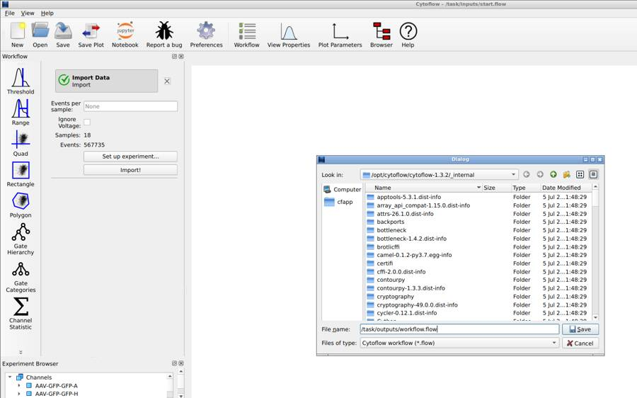
text(await tools.exec_command({cmd:"cu click 1308 745 && cu click 45 455 && cu screenshot /tmp/screen.png",max_output_tokens:2000}));
image((await tools.view_image({path:"/tmp/screen.png"})).image_url);
Script completed Wall time 0.3 seconds Output:
{"chunk_id":"6d8b47","wall_time_seconds":0.10407497,"exit_code":0,"original_token_count":4,"output":"/tmp/screen.png\n"}
text(await tools.exec_command({cmd:"sleep 2 && cu screenshot /tmp/screen.png",max_output_tokens:2000}));
image((await tools.view_image({path:"/tmp/screen.png"})).image_url);
Script completed Wall time 2.1 seconds Output:
{"chunk_id":"862360","wall_time_seconds":1.8919028519999999,"exit_code":0,"original_token_count":4,"output":"/tmp/screen.png\n"}
text(await tools.exec_command({cmd:"cu click 271 324 && cu type cells && cu click 359 353 && cu screenshot /tmp/screen.png",max_output_tokens:2000}));
image((await tools.view_image({path:"/tmp/screen.png"})).image_url);
Script completed Wall time 0.4 seconds Output:
{"chunk_id":"e3a830","wall_time_seconds":0.231292841,"exit_code":0,"original_token_count":4,"output":"/tmp/screen.png\n"}
text(await tools.exec_command({cmd:"cu click 227 426 && cu click 359 385 && cu screenshot /tmp/screen.png",max_output_tokens:2000}));
image((await tools.view_image({path:"/tmp/screen.png"})).image_url);
Script completed Wall time 0.3 seconds Output:
{"chunk_id":"47503c","wall_time_seconds":0.100337212,"exit_code":0,"original_token_count":4,"output":"/tmp/screen.png\n"}
text(await tools.exec_command({cmd:"cu click 227 599 && cu click 655 70 && sleep 2 && cu screenshot /tmp/screen.png",max_output_tokens:2000}));
image((await tools.view_image({path:"/tmp/screen.png"})).image_url);
Script completed Wall time 2.3 seconds Output:
{"chunk_id":"9f0788","wall_time_seconds":2.131726689,"exit_code":0,"original_token_count":4,"output":"/tmp/screen.png\n"}
text(await tools.exec_command({cmd:"sleep 2 && cu screenshot /tmp/screen.png",max_output_tokens:2000}));
image((await tools.view_image({path:"/tmp/screen.png"})).image_url);
Script completed Wall time 2.1 seconds Output:
{"chunk_id":"334323","wall_time_seconds":1.919866001,"exit_code":0,"original_token_count":4,"output":"/tmp/screen.png\n"}text(await tools.exec_command({cmd:"cu click 727 9 double && cu screenshot /tmp/screen.png",max_output_tokens:2000}));
image((await tools.view_image({path:"/tmp/screen.png"})).image_url);
Script completed Wall time 0.3 seconds Output:
{"chunk_id":"175962","wall_time_seconds":0.12903386,"exit_code":0,"original_token_count":4,"output":"/tmp/screen.png\n"}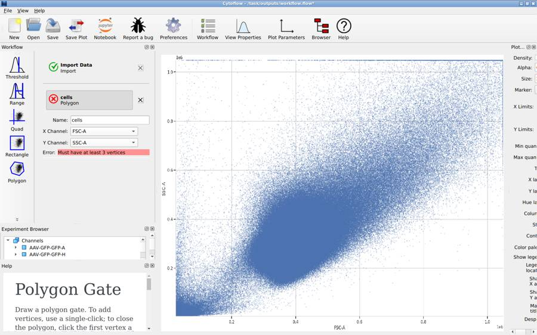
text(await tools.exec_command({cmd:"cu click 768 69 && cu click 650 69 && cu screenshot /tmp/screen.png",max_output_tokens:2000}));
image((await tools.view_image({path:"/tmp/screen.png"})).image_url);
Script completed Wall time 0.3 seconds Output:
{"chunk_id":"70041a","wall_time_seconds":0.124676722,"exit_code":0,"original_token_count":4,"output":"/tmp/screen.png\n"}
text(await tools.exec_command({cmd:"cu click 576 763 && cu click 576 687 && cu click 636 548 && cu click 767 357 && cu click 929 180 && cu click 995 180 && cu click 995 580 && cu click 828 713 && cu click 677 770 && cu click 576 763 && sleep 2 && cu screenshot /tmp/screen.png",max_output_tokens:2000}));
image((await tools.view_image({path:"/tmp/screen.png"})).image_url);
Script completed Wall time 3.1 seconds Output:
{"chunk_id":"85cf4a","wall_time_seconds":2.96204226,"exit_code":0,"original_token_count":4,"output":"/tmp/screen.png\n"}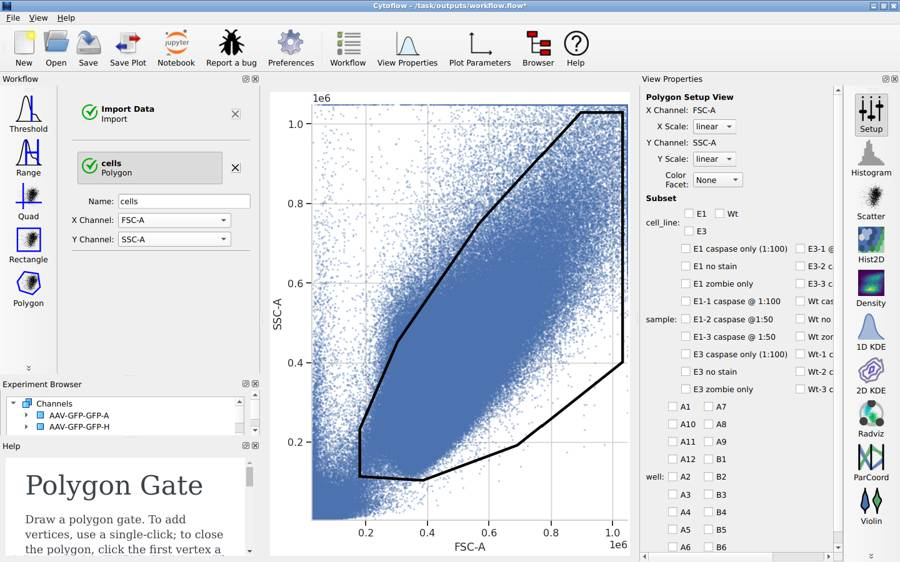
text(await tools.exec_command({cmd:"cu key ctrl+s && cu click 46 454 && sleep 1 && cu screenshot /tmp/screen.png",max_output_tokens:2000}));
image((await tools.view_image({path:"/tmp/screen.png"})).image_url);
Script completed Wall time 1.2 seconds Output:
{"chunk_id":"c29dda","wall_time_seconds":1.030776374,"exit_code":0,"original_token_count":4,"output":"/tmp/screen.png\n"}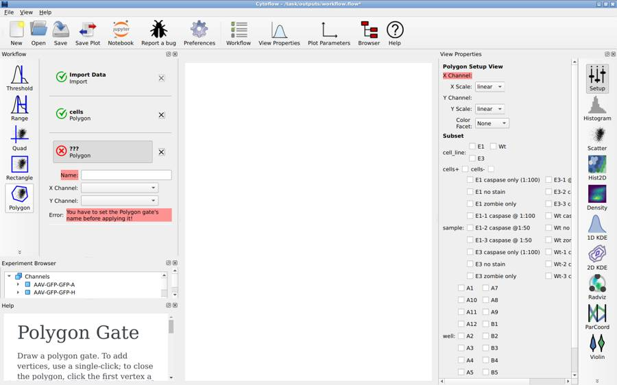
text(await tools.exec_command({cmd:"cu click 276 409 && cu type singlet_shape && cu click 357 437 && cu key f && cu key Return && cu click 357 469 && cu key f && cu key Down && cu key Return && cu click 1086 395 && sleep 2 && cu screenshot /tmp/screen.png",max_output_tokens:2000}));
image((await tools.view_image({path:"/tmp/screen.png"})).image_url);
Script completed Wall time 2.9 seconds Output:
{"chunk_id":"1c60a4","wall_time_seconds":2.730039,"exit_code":0,"original_token_count":4,"output":"/tmp/screen.png\n"}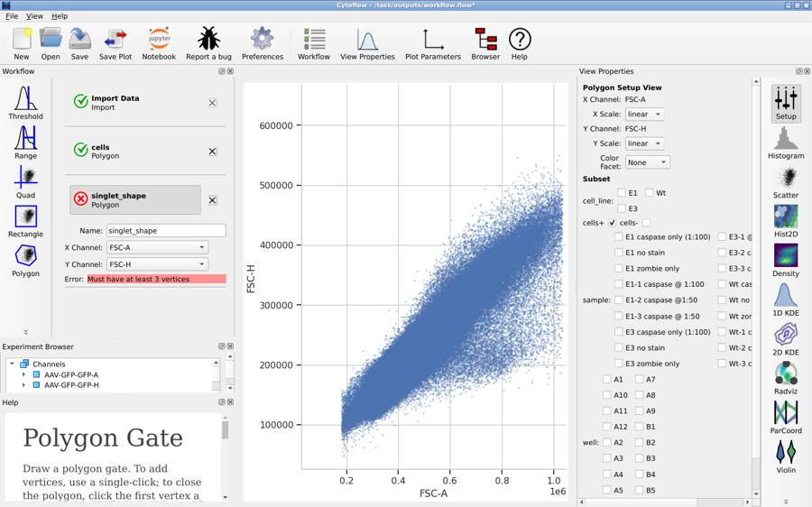
text(await tools.exec_command({cmd:"cu click 606 770 && cu click 606 691 && cu click 798 498 && cu click 998 329 && cu click 998 477 && cu click 798 616 && cu click 606 770 && cu click 47 525 && sleep 2 && cu screenshot /tmp/screen.png",max_output_tokens:2000}));
image((await tools.view_image({path:"/tmp/screen.png"})).image_url);
Script completed Wall time 2.9 seconds Output:
{"chunk_id":"696a5a","wall_time_seconds":2.752020301,"exit_code":0,"original_token_count":4,"output":"/tmp/screen.png\n"}text(await tools.exec_command({cmd:"cu click 46 524 && sleep 1 && cu screenshot /tmp/screen.png",max_output_tokens:2000}));
image((await tools.view_image({path:"/tmp/screen.png"})).image_url);
Script completed Wall time 1.2 seconds Output:
{"chunk_id":"6cadaa","wall_time_seconds":1.009673611,"exit_code":0,"original_token_count":4,"output":"/tmp/screen.png\n"}text(await tools.exec_command({cmd:"cu scroll 45 494 down 3 && cu screenshot /tmp/screen.png",max_output_tokens:2000}));
image((await tools.view_image({path:"/tmp/screen.png"})).image_url);
Script completed Wall time 0.4 seconds Output:
{"chunk_id":"6e6c9f","wall_time_seconds":0.209236309,"exit_code":0,"original_token_count":4,"output":"/tmp/screen.png\n"}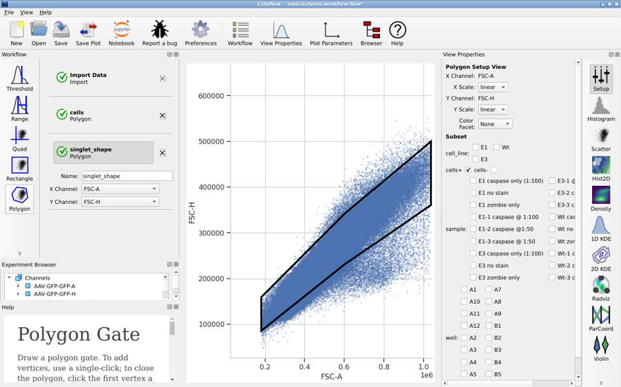
text(await tools.exec_command({cmd:"cu click 47 589 && cu screenshot /tmp/screen.png",max_output_tokens:2000}));
image((await tools.view_image({path:"/tmp/screen.png"})).image_url);
Script completed Wall time 0.2 seconds Output:
{"chunk_id":"5cbe4c","wall_time_seconds":0.009134286,"exit_code":0,"original_token_count":4,"output":"/tmp/screen.png\n"}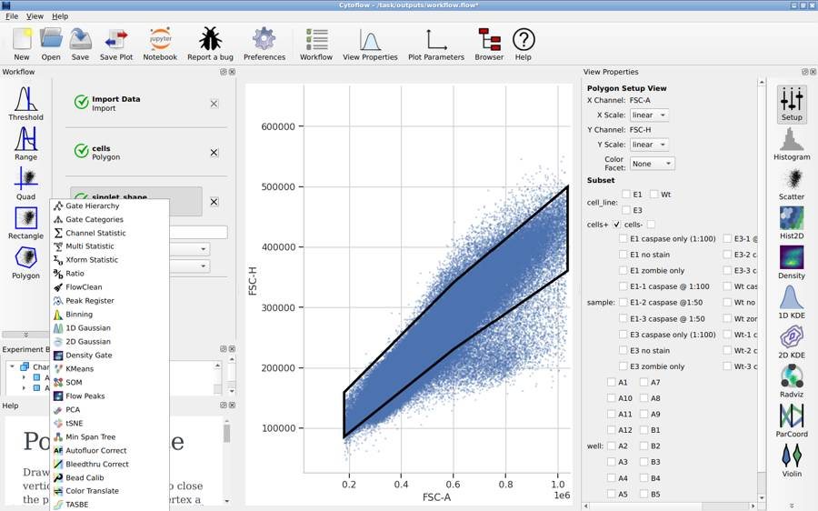
text(await tools.exec_command({cmd:"cu click 172 362 && sleep 1 && cu screenshot /tmp/screen.png",max_output_tokens:2000}));
image((await tools.view_image({path:"/tmp/screen.png"})).image_url);
Script completed Wall time 1.2 seconds Output:
{"chunk_id":"11ae00","wall_time_seconds":1.006009013,"exit_code":0,"original_token_count":4,"output":"/tmp/screen.png\n"}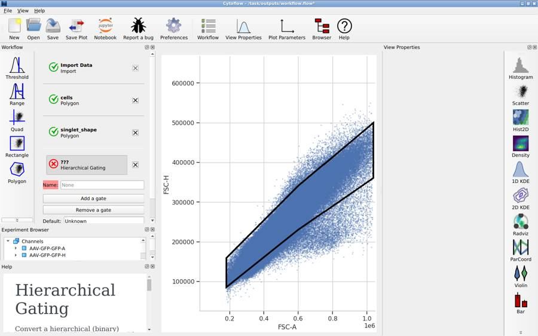
text(await tools.exec_command({cmd:"cu scroll 313 544 down 4 && cu screenshot /tmp/screen.png",max_output_tokens:2000}));
image((await tools.view_image({path:"/tmp/screen.png"})).image_url);
Script completed Wall time 0.5 seconds Output:
{"chunk_id":"4e4f1b","wall_time_seconds":0.305108942,"exit_code":0,"original_token_count":4,"output":"/tmp/screen.png\n"}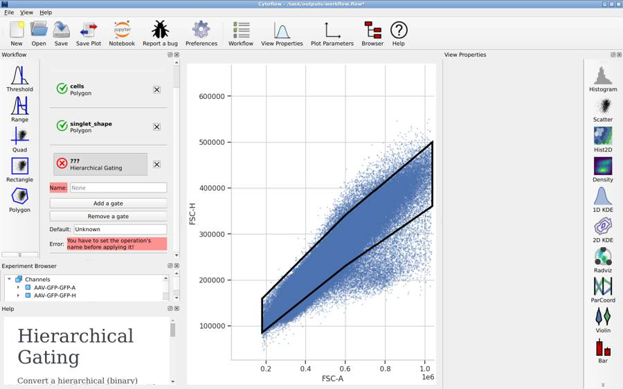
text(await tools.exec_command({cmd:"cu click 361 380 && cu screenshot /tmp/screen.png",max_output_tokens:2000}));
image((await tools.view_image({path:"/tmp/screen.png"})).image_url);
Script completed Wall time 0.2 seconds Output:
{"chunk_id":"3ae80a","wall_time_seconds":0.00000387,"exit_code":0,"original_token_count":4,"output":"/tmp/screen.png\n"}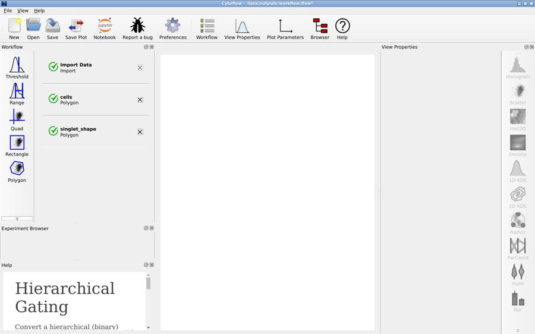
text(await tools.exec_command({cmd:"cu click 235 351 && sleep 1 && cu click 265 409 && cu key ctrl+a && cu type singlets && cu key Tab && sleep 1 && cu click 45 245 && sleep 1 && cu screenshot /tmp/screen.png",max_output_tokens:2000}));
image((await tools.view_image({path:"/tmp/screen.png"})).image_url);
Script completed Wall time 3.6 seconds Output:
{"chunk_id":"5e43e3","wall_time_seconds":3.461452958,"exit_code":0,"original_token_count":4,"output":"/tmp/screen.png\n"}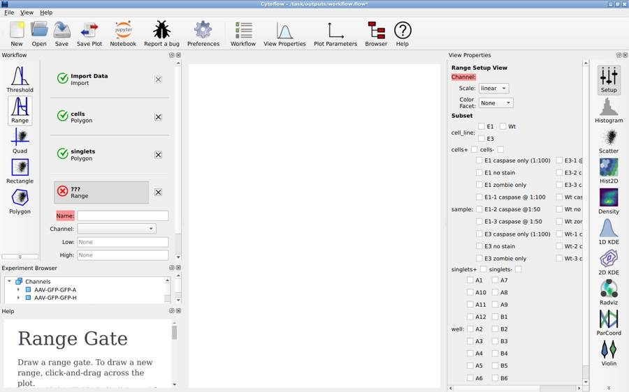
text(await tools.exec_command({cmd:"cu click 265 494 && cu type live && cu click 346 524 && cu key l && cu key Return && cu click 1150 201 && cu screenshot /tmp/screen.png",max_output_tokens:2000}));
image((await tools.view_image({path:"/tmp/screen.png"})).image_url);
Script completed Wall time 0.5 seconds Output:
{"chunk_id":"e5e827","wall_time_seconds":0.347229997,"exit_code":0,"original_token_count":4,"output":"/tmp/screen.png\n"}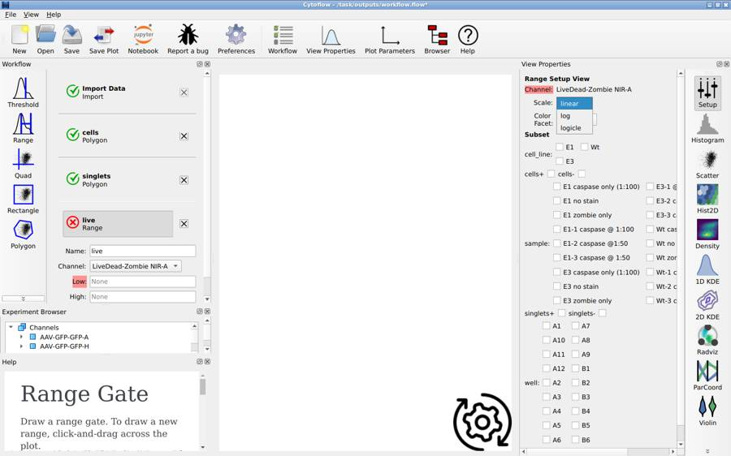
text(await tools.exec_command({cmd:"cu click 1128 253 && cu click 1085 342 && cu click 1106 617 && cu click 1077 783 && cu click 1134 699 && cu click 1134 783 && cu click 1158 236 && cu screenshot /tmp/screen.png",max_output_tokens:2000}));
image((await tools.view_image({path:"/tmp/screen.png"})).image_url);
Script completed Wall time 0.8 seconds Output:
{"chunk_id":"5c257e","wall_time_seconds":0.633645256,"exit_code":0,"original_token_count":4,"output":"/tmp/screen.png\n"}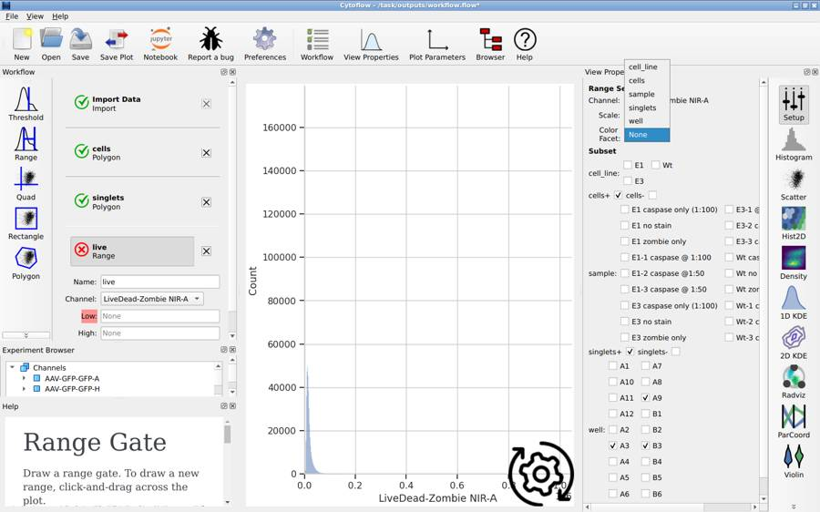
text(await tools.exec_command({cmd:"cu click 1128 116 && sleep 2 && cu screenshot /tmp/screen.png",max_output_tokens:2000}));
image((await tools.view_image({path:"/tmp/screen.png"})).image_url);
Script completed Wall time 2.2 seconds Output:
{"chunk_id":"29034d","wall_time_seconds":2.004788459,"exit_code":0,"original_token_count":4,"output":"/tmp/screen.png\n"}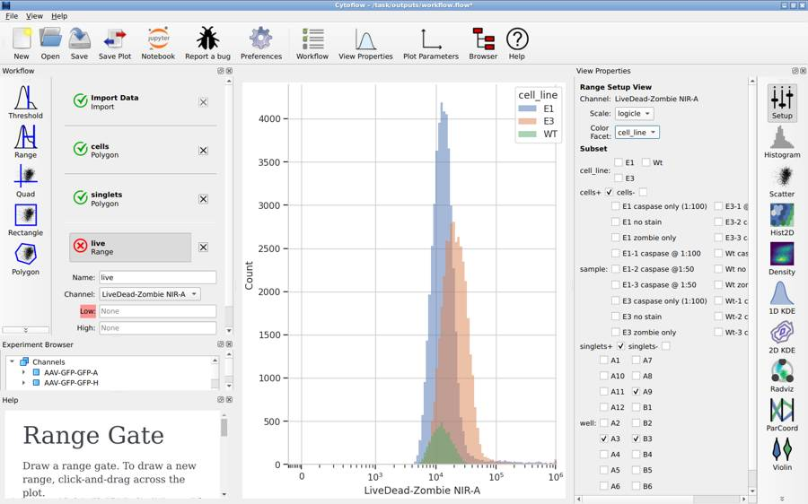
text(await tools.exec_command({cmd:"cu click 267 556 && cu key ctrl+a && cu type -1000000 && cu click 267 585 && cu key ctrl+a && cu type 100000 && cu key Tab && sleep 2 && cu screenshot /tmp/screen.png",max_output_tokens:2000}));
image((await tools.view_image({path:"/tmp/screen.png"})).image_url);
Script completed Wall time 2.7 seconds Output:
{"chunk_id":"64d80e","wall_time_seconds":2.5325084049999997,"exit_code":0,"original_token_count":4,"output":"/tmp/screen.png\n"}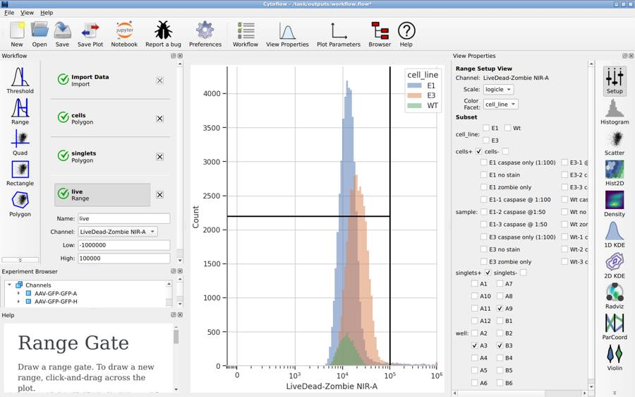
text(await tools.exec_command({cmd:"cu key ctrl+s && cu click 43 174 && sleep 1 && cu scroll 310 531 down 7 && cu screenshot /tmp/screen.png",max_output_tokens:2000}));
image((await tools.view_image({path:"/tmp/screen.png"})).image_url);
Script completed Wall time 1.9 seconds Output:
{"chunk_id":"1da03a","wall_time_seconds":1.734757222,"exit_code":0,"original_token_count":4,"output":"/tmp/screen.png\n"}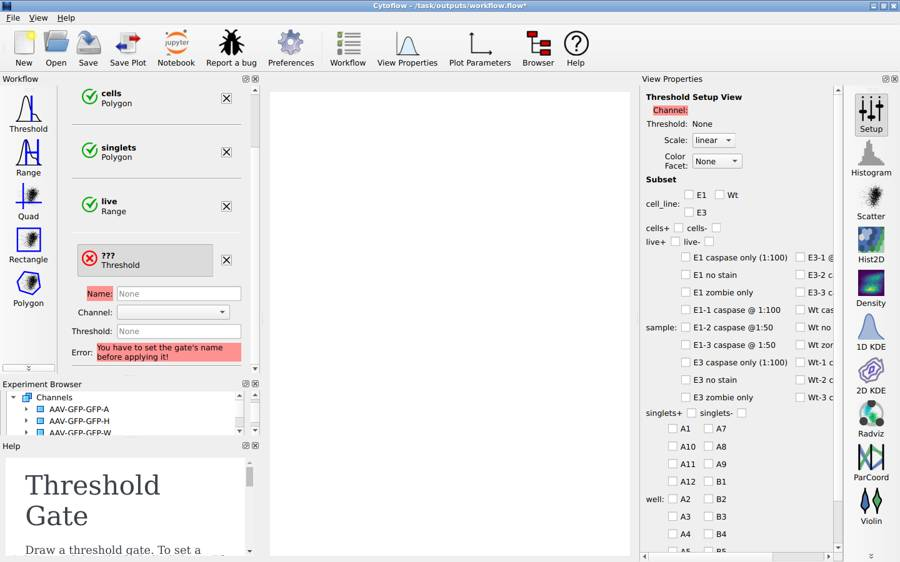
text(await tools.exec_command({cmd:"cu click 263 470 && cu key ctrl+a && cu type marker_positive && cu click 355 501 && cu key a && cu key Return && cu click 1166 226 && cu key End && cu key Return && cu click 1085 363 && cu click 1081 386 && cu click 1106 661 && cu click 1076 686 && cu click 1133 685 && cu click 1133 742 && cu click 1133 770 && cu click 1076 827 && cu click 1133 827 && cu click 1170 258 && cu key c && cu key Return && sleep 2 && cu screenshot /tmp/screen.png",max_output_tokens:2000}));
image((await tools.view_image({path:"/tmp/screen.png"})).image_url);
Script completed Wall time 3.9 seconds Output:
{"chunk_id":"43fe02","wall_time_seconds":3.757206735,"exit_code":0,"original_token_count":4,"output":"/tmp/screen.png\n"}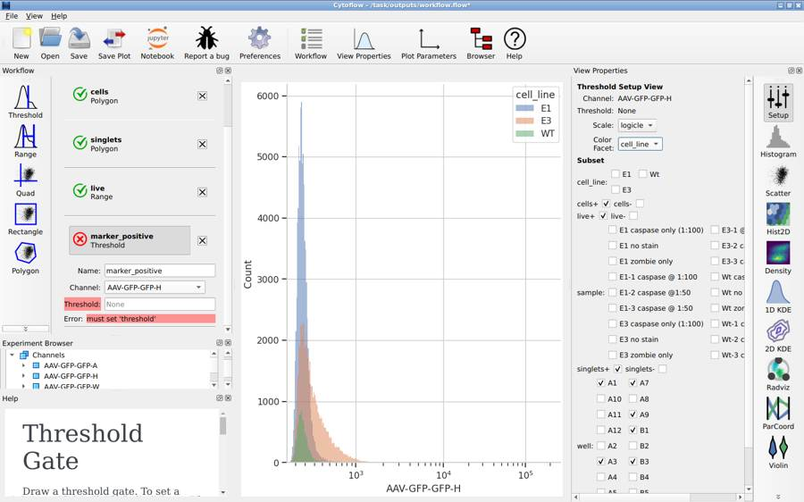
text(await tools.exec_command({cmd:"cu click 357 514 && cu key Home && cu key Return && sleep 2 && cu screenshot /tmp/screen.png",max_output_tokens:2000}));
image((await tools.view_image({path:"/tmp/screen.png"})).image_url);
Script completed Wall time 2.2 seconds Output:
{"chunk_id":"a124d5","wall_time_seconds":2.033222368,"exit_code":0,"original_token_count":4,"output":"/tmp/screen.png\n"}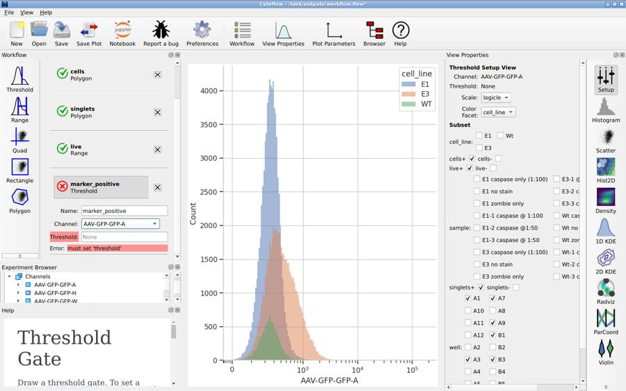
text(await tools.exec_command({cmd:"cu click 270 545 && cu key ctrl+a && cu type 3000 && cu key Tab && cu click 1076 686 && cu click 1133 686 && cu click 1133 742 && cu click 1133 771 && cu click 1076 827 && cu click 1133 827 && sleep 2 && cu screenshot /tmp/screen.png",max_output_tokens:2000}));
image((await tools.view_image({path:"/tmp/screen.png"})).image_url);
Script completed Wall time 2.9 seconds Output:
{"chunk_id":"55ee0e","wall_time_seconds":2.772499823,"exit_code":0,"original_token_count":4,"output":"/tmp/screen.png\n"}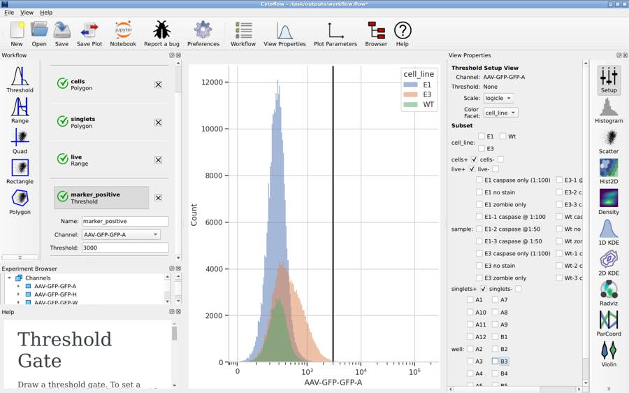
text(await tools.exec_command({cmd:"cu key ctrl+s && cu click 46 589 && cu screenshot /tmp/screen.png",max_output_tokens:2000}));
image((await tools.view_image({path:"/tmp/screen.png"})).image_url);
Script completed Wall time 0.2 seconds Output:
{"chunk_id":"9f3aaf","wall_time_seconds":0.028672079,"exit_code":0,"original_token_count":4,"output":"/tmp/screen.png\n"}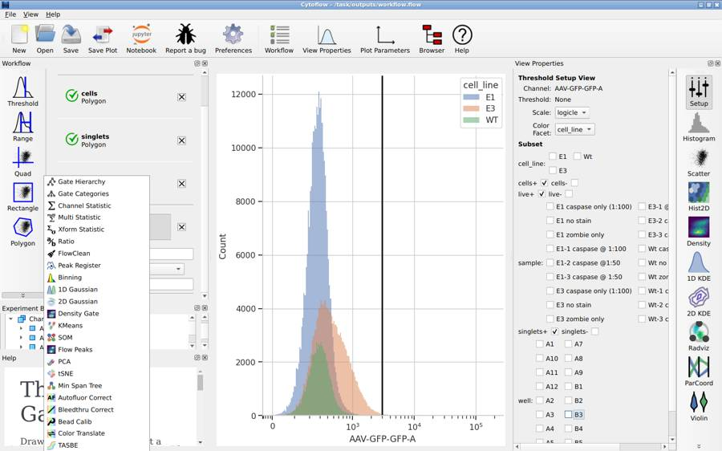
text(await tools.exec_command({cmd:"cu click 176 409 && sleep 1 && cu scroll 304 535 down 10 && cu screenshot /tmp/screen.png",max_output_tokens:2000}));
image((await tools.view_image({path:"/tmp/screen.png"})).image_url);
Script completed Wall time 2.2 seconds Output:
{"chunk_id":"0fd4f4","wall_time_seconds":2.006250978,"exit_code":0,"original_token_count":4,"output":"/tmp/screen.png\n"}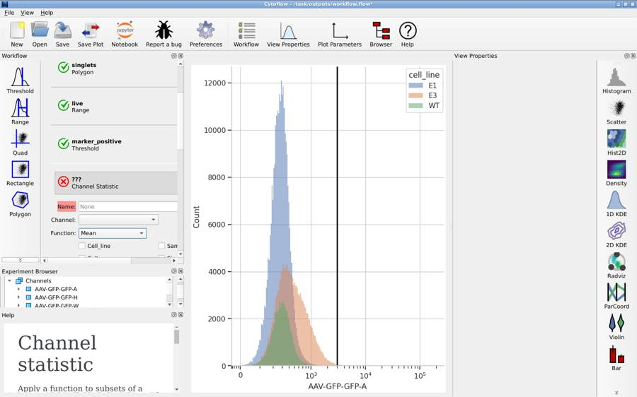
text(await tools.exec_command({cmd:"cu click 865 70 && cu click 923 69 && cu drag 420 427 555 427 && cu scroll 313 514 down 6 && cu screenshot /tmp/screen.png",max_output_tokens:2000}));
image((await tools.view_image({path:"/tmp/screen.png"})).image_url);
Script completed Wall time 0.9 seconds Output:
{"chunk_id":"c1a059","wall_time_seconds":0.743495654,"exit_code":0,"original_token_count":4,"output":"/tmp/screen.png\n"}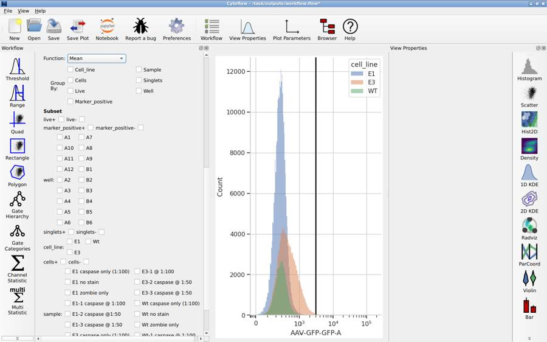
text(await tools.exec_command({cmd:"cu click 320 154 && cu screenshot /tmp/screen.png",max_output_tokens:2000}));
image((await tools.view_image({path:"/tmp/screen.png"})).image_url);
Script completed Wall time 0.2 seconds Output:
{"chunk_id":"5adc57","wall_time_seconds":0.00047879,"exit_code":0,"original_token_count":4,"output":"/tmp/screen.png\n"}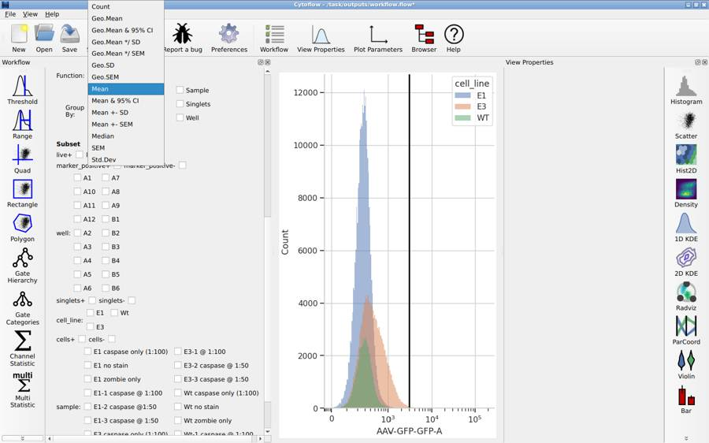
text(await tools.exec_command({cmd:"cu click 211 12 && cu click 185 210 && cu click 185 238 && cu click 185 266 && cu click 365 211 && cu click 365 239 && cu scroll 479 255 up 14 && cu screenshot /tmp/screen.png",max_output_tokens:2000}));
image((await tools.view_image({path:"/tmp/screen.png"})).image_url);
Script completed Wall time 2.1 seconds Output:
{"chunk_id":"0d98f4","wall_time_seconds":1.9294053180000001,"exit_code":0,"original_token_count":4,"output":"/tmp/screen.png\n"}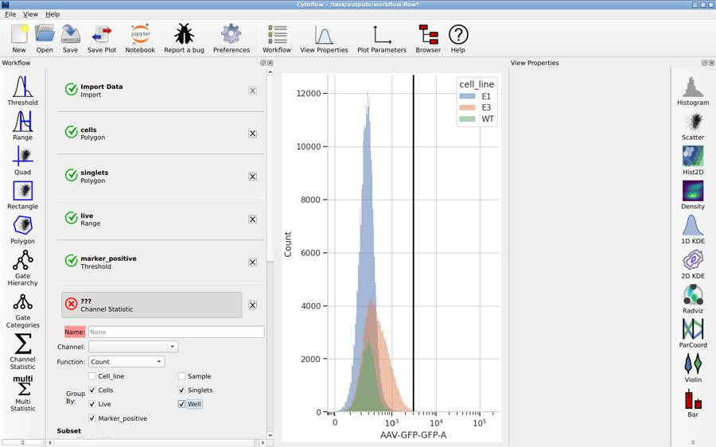
text(await tools.exec_command({cmd:"cu click 290 669 && cu type gate_counts && cu click 348 698 && cu key f && cu key Return && cu click 1395 889 && sleep 2 && cu screenshot /tmp/screen.png",max_output_tokens:2000}));
image((await tools.view_image({path:"/tmp/screen.png"})).image_url);
Script completed Wall time 2.7 seconds Output:
{"chunk_id":"22de2d","wall_time_seconds":2.522877139,"exit_code":0,"original_token_count":4,"output":"/tmp/screen.png\n"}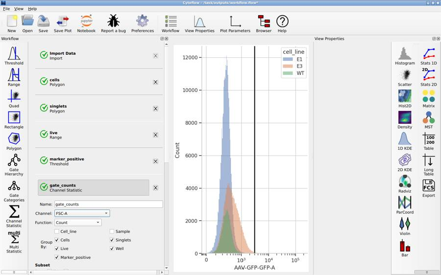
text(await tools.exec_command({cmd:"cu click 1400 523 && sleep 1 && cu screenshot /tmp/screen.png",max_output_tokens:2000}));
image((await tools.view_image({path:"/tmp/screen.png"})).image_url);
Script completed Wall time 1.2 seconds Output:
{"chunk_id":"0382c5","wall_time_seconds":1.002080875,"exit_code":0,"original_token_count":4,"output":"/tmp/screen.png\n"}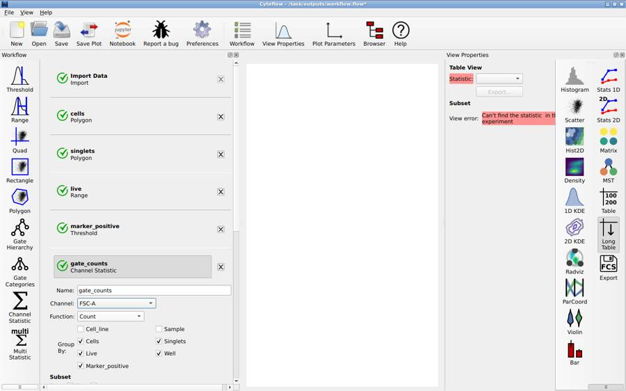
text(await tools.exec_command({cmd:"cu click 1191 181 && cu key Down && cu key Return && sleep 1 && cu screenshot /tmp/screen.png",max_output_tokens:2000}));
image((await tools.view_image({path:"/tmp/screen.png"})).image_url);
Script completed Wall time 1.2 seconds Output:
{"chunk_id":"b783a6","wall_time_seconds":1.031301164,"exit_code":0,"original_token_count":4,"output":"/tmp/screen.png\n"}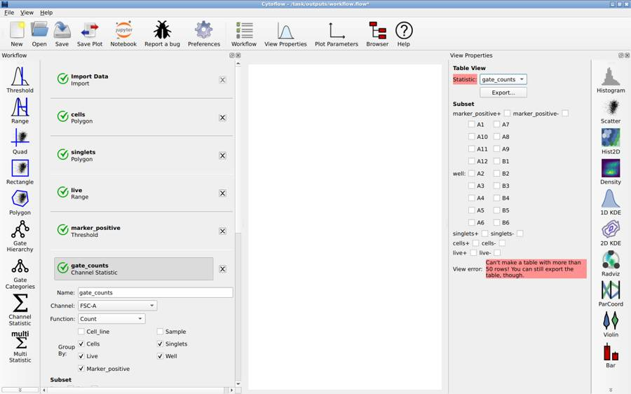
text(await tools.exec_command({cmd:"cu click 1147 210 && cu paste /task/outputs/gate_counts_export.csv && cu screenshot /tmp/screen.png",max_output_tokens:2000}));
image((await tools.view_image({path:"/tmp/screen.png"})).image_url);
Script completed Wall time 1.5 seconds Output:
{"chunk_id":"9a0447","wall_time_seconds":1.336117676,"exit_code":0,"original_token_count":4,"output":"/tmp/screen.png\n"}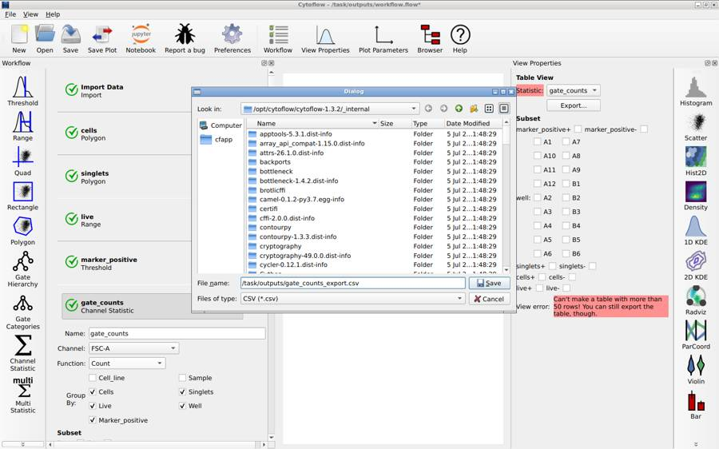
text(await tools.exec_command({cmd:"cu click 979 567 && cu key ctrl+s && sleep 1 && head -12 /task/outputs/gate_counts_export.csv",max_output_tokens:3000}));
Script completed
Wall time 1.1 seconds
Output:
{"chunk_id":"8101f5","wall_time_seconds":0.986164981,"exit_code":0,"original_token_count":59,"output":"cells,live,marker_positive,singlets,well,FSC-A\n0,0,0,0,A10,385.0\n0,0,0,0,A11,352.0\n0,0,0,0,A12,526.0\n0,0,0,0,A3,24.0\n0,0,0,0,A4,74.0\n0,0,0,0,A5,21.0\n0,0,0,0,A6,95.0\n0,0,0,0,A9,334.0\n0,0,0,0,B3,773.0\n0,0,0,0,B4,464.0\n0,0,0,0,B5,439.0\n"}text(await tools.exec_command({cmd:"python - <<'PY'\nimport pandas as pd\nfrom pathlib import Path\np=Path('/task/outputs')\nx=pd.read_csv(p/'gate_counts_export.csv')\nlayout=pd.read_csv('/task/inputs/plate_layout.csv')\nrows=[]\nfor r in layout.itertuples(index=False):\n a=x[x.well==r.well]\n parent='none'; pc=None\n for pop,role in [('all_events','other'),('cells','cells'),('singlets','singlets'),('live','live'),('marker_positive','marker_positive')]:\n if pop!='all_events': a=a[a[pop]==1]\n n=int(a['FSC-A'].sum())\n rows.append([r.file,r.well,pop,role,parent,n,None if pc is None or pc==0 else n/pc*100])\n parent=pop; pc=n\ncounts=pd.DataFrame(rows,columns=['file','well','population','role','parent','count','pct_of_parent'])\ncounts.to_csv(p/'counts.csv',index=False)\nt=counts.pivot(index='well',columns='population',values='count').reindex(layout.well)\nt['live_pct']=100*t.live/t.singlets\nt['marker_pct']=100*t.marker_positive/t.live\nprint(t.to_string())\nprint('Total', t.all_events.sum())\nPY",max_output_tokens:5000}));
text(await tools.clock__curr_time({}));
Script completed
Wall time 0.0 seconds
Output:
{"chunk_id":"0cf2df","wall_time_seconds":0.00000372,"exit_code":127,"original_token_count":12,"output":"/bin/bash: line 1: python: command not found\n"}
{"current_time":"2026-11-06 00:38:16 UTC"}text(await tools.exec_command({cmd:"python3 - <<'PY'\nimport pandas as pd\nfrom pathlib import Path\np=Path('/task/outputs')\nx=pd.read_csv(p/'gate_counts_export.csv')\nlayout=pd.read_csv('/task/inputs/plate_layout.csv')\nrows=[]\nfor r in layout.itertuples(index=False):\n a=x[x.well==r.well]\n parent='none'; pc=None\n for pop,role in [('all_events','other'),('cells','cells'),('singlets','singlets'),('live','live'),('marker_positive','marker_positive')]:\n if pop!='all_events': a=a[a[pop]==1]\n n=int(a['FSC-A'].sum())\n rows.append([r.file,r.well,pop,role,parent,n,None if pc is None or pc==0 else n/pc*100])\n parent=pop; pc=n\ncounts=pd.DataFrame(rows,columns=['file','well','population','role','parent','count','pct_of_parent'])\ncounts.to_csv(p/'counts.csv',index=False)\nt=counts.pivot(index='well',columns='population',values='count').reindex(layout.well)\nt['live_pct']=100*t.live/t.singlets\nt['marker_pct']=100*t.marker_positive/t.live\nprint(t.to_string())\nprint('Total', t.all_events.sum())\nPY",max_output_tokens:5000}));
Script completed
Wall time 0.3 seconds
Output:
{"chunk_id":"20d95e","wall_time_seconds":0.178496612,"exit_code":0,"original_token_count":444,"output":"population all_events cells live marker_positive singlets live_pct marker_pct\nwell \nA1 6969 6342 6167 0 6167 100.000000 0.000000\nA2 3149 2530 2466 16 2466 100.000000 0.648824\nA3 5742 5138 4935 0 4985 98.996991 0.000000\nA4 20776 19548 18557 65 18727 99.092220 0.350272\nA5 13119 12510 11978 63 12060 99.320066 0.525964\nA6 21946 20843 19756 105 20036 98.602515 0.531484\nA7 33911 32202 31143 1 31143 100.000000 0.003211\nA8 52749 50392 48274 65 48274 100.000000 0.134648\nA9 49297 46846 44151 0 44879 98.377860 0.000000\nA10 58936 56072 52650 65 53498 98.414894 0.123457\nA11 51193 48461 45670 70 46404 98.418240 0.153273\nA12 51047 47846 44893 105 45858 97.895678 0.233889\nB1 26935 22535 21632 28 21632 100.000000 0.129438\nB2 36048 30731 29552 321 29552 100.000000 1.086221\nB3 46022 39274 37135 64 37625 98.697674 0.172344\nB4 27503 23436 22124 248 22469 98.464551 1.120955\nB5 37596 32757 30968 232 31393 98.646195 0.749160\nB6 24797 21329 20181 173 20499 98.448705 0.857242\nTotal 567735\n"}text(await tools.exec_command({cmd:"cu click 1392 245 && sleep 1 && cu screenshot /tmp/screen.png",max_output_tokens:2000}));
image((await tools.view_image({path:"/tmp/screen.png"})).image_url);
Script completed Wall time 1.2 seconds Output:
{"chunk_id":"174e05","wall_time_seconds":1.003226934,"exit_code":0,"original_token_count":4,"output":"/tmp/screen.png\n"}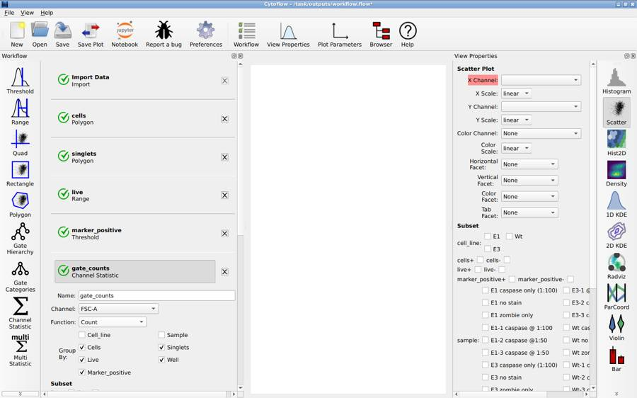
text(await tools.exec_command({cmd:"cu click 1303 180 && cu key End && cu key Return && cu click 1303 239 && cu key f && cu key Return && cu click 1248 482 && cu key w && cu key Return && cu click 558 70 && sleep 2 && cu screenshot /tmp/screen.png",max_output_tokens:2000}));
image((await tools.view_image({path:"/tmp/screen.png"})).image_url);
Script completed Wall time 2.6 seconds Output:
{"chunk_id":"90f9d9","wall_time_seconds":2.41823833,"exit_code":0,"original_token_count":4,"output":"/tmp/screen.png\n"}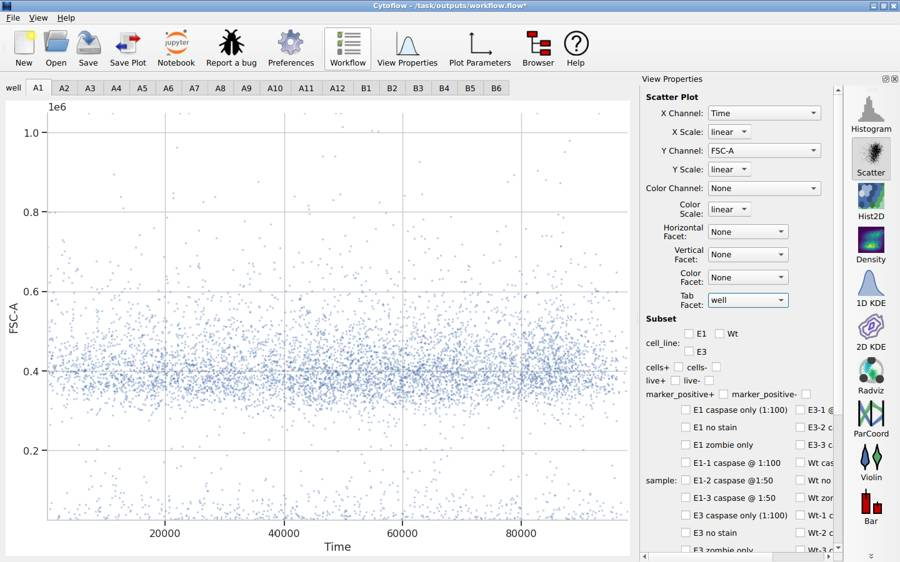
text(await tools.exec_command({cmd:"cu click 103 140 && sleep 1 && cu screenshot /tmp/qc_A2.png && cu click 145 140 && sleep 1 && cu screenshot /tmp/qc_A3.png && cu click 185 140 && sleep 1 && cu screenshot /tmp/qc_A4.png",max_output_tokens:2000}));
for (const p of ["/tmp/qc_A2.png","/tmp/qc_A3.png","/tmp/qc_A4.png"]) image((await tools.view_image({path:p})).image_url);
Script completed Wall time 3.5 seconds Output:
{"chunk_id":"c956d8","wall_time_seconds":3.341645335,"exit_code":0,"original_token_count":12,"output":"/tmp/qc_A2.png\n/tmp/qc_A3.png\n/tmp/qc_A4.png\n"}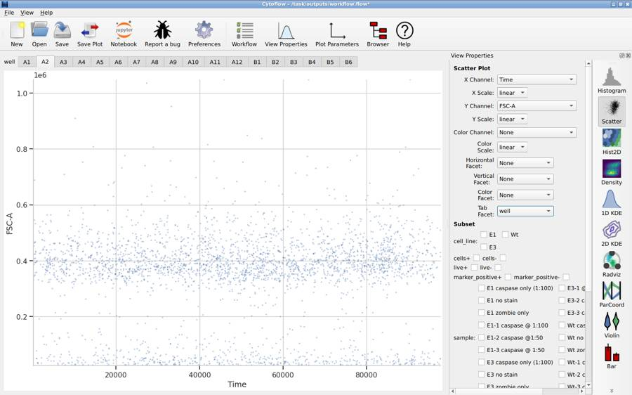
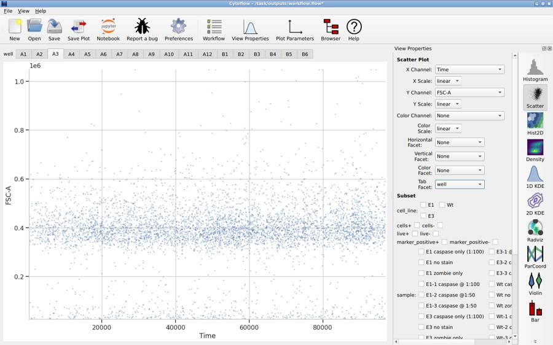
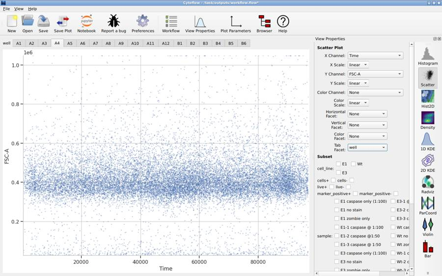
text(await tools.exec_command({cmd:"cu click 227 140 && sleep 1 && cu screenshot /tmp/qc_A5.png && cu click 269 140 && sleep 1 && cu screenshot /tmp/qc_A6.png && cu click 311 140 && sleep 1 && cu screenshot /tmp/qc_A7.png",max_output_tokens:2000}));
for (const p of ["/tmp/qc_A5.png","/tmp/qc_A6.png","/tmp/qc_A7.png"]) image((await tools.view_image({path:p})).image_url);
Script completed Wall time 3.6 seconds Output:
{"chunk_id":"2a0737","wall_time_seconds":3.362847656,"exit_code":0,"original_token_count":12,"output":"/tmp/qc_A5.png\n/tmp/qc_A6.png\n/tmp/qc_A7.png\n"}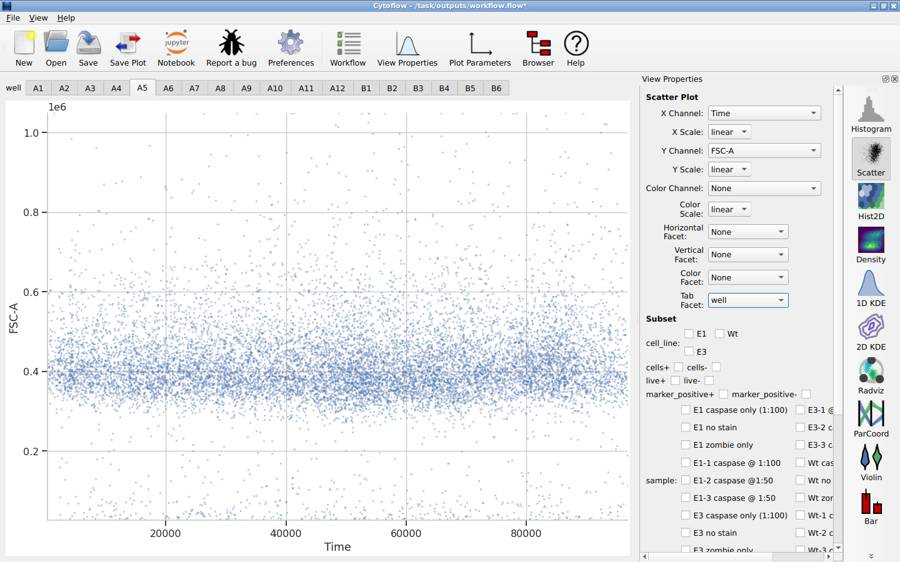
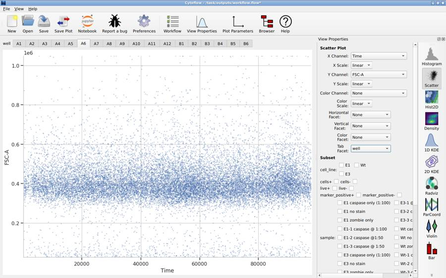
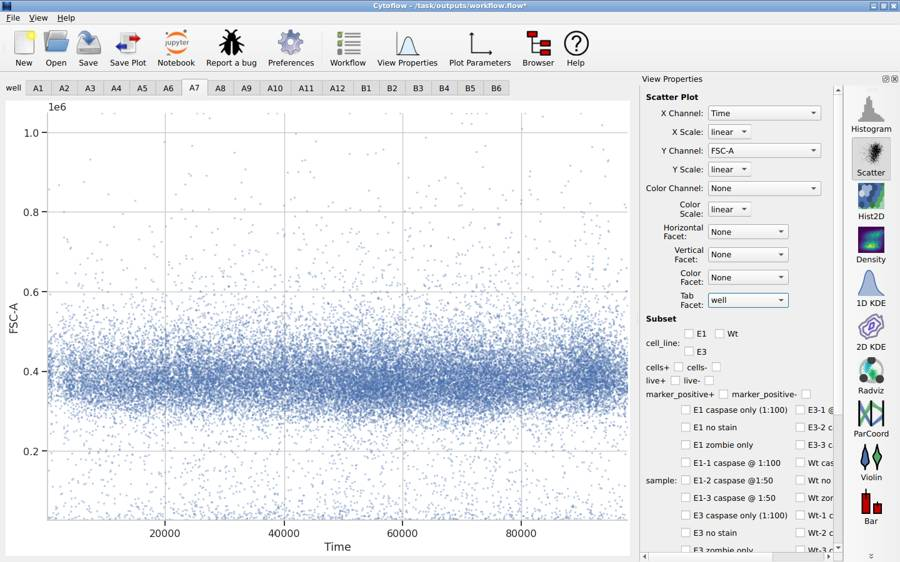
text(await tools.exec_command({cmd:"cu click 353 140 && sleep 1 && cu screenshot /tmp/qc_A8.png && cu click 395 140 && sleep 1 && cu screenshot /tmp/qc_A9.png && cu click 440 140 && sleep 1 && cu screenshot /tmp/qc_A10.png",max_output_tokens:2000}));
for (const p of ["/tmp/qc_A8.png","/tmp/qc_A9.png","/tmp/qc_A10.png"]) image((await tools.view_image({path:p})).image_url);
Script completed Wall time 3.6 seconds Output:
{"chunk_id":"20436d","wall_time_seconds":3.382465548,"exit_code":0,"original_token_count":12,"output":"/tmp/qc_A8.png\n/tmp/qc_A9.png\n/tmp/qc_A10.png\n"}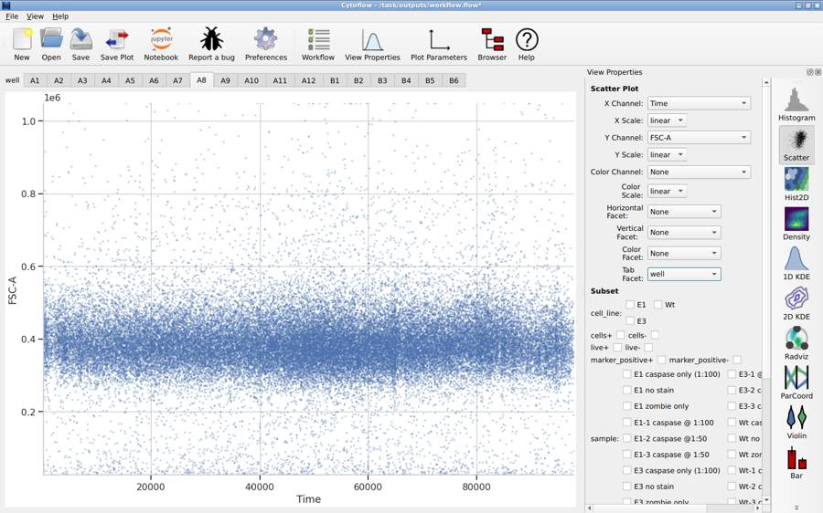
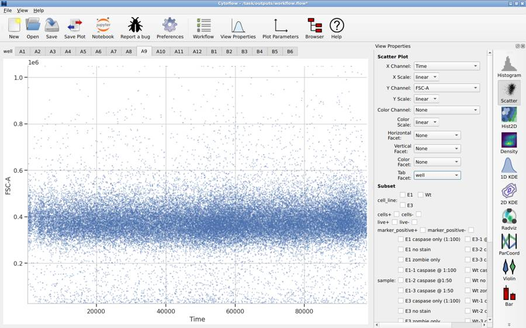
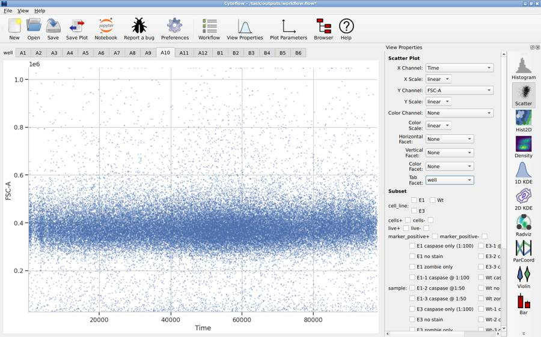
text(await tools.exec_command({cmd:"cu click 490 140 && sleep 1 && cu screenshot /tmp/qc_A11.png && cu click 539 140 && sleep 1 && cu screenshot /tmp/qc_A12.png && cu click 586 140 && sleep 1 && cu screenshot /tmp/qc_B1.png",max_output_tokens:2000}));
for (const p of ["/tmp/qc_A11.png","/tmp/qc_A12.png","/tmp/qc_B1.png"]) image((await tools.view_image({path:p})).image_url);
Script completed Wall time 3.6 seconds Output:
{"chunk_id":"42b28c","wall_time_seconds":3.395128374,"exit_code":0,"original_token_count":12,"output":"/tmp/qc_A11.png\n/tmp/qc_A12.png\n/tmp/qc_B1.png\n"}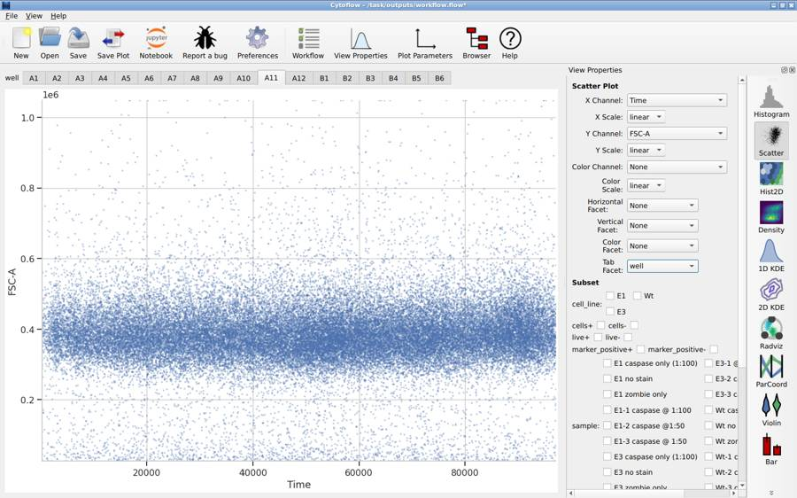
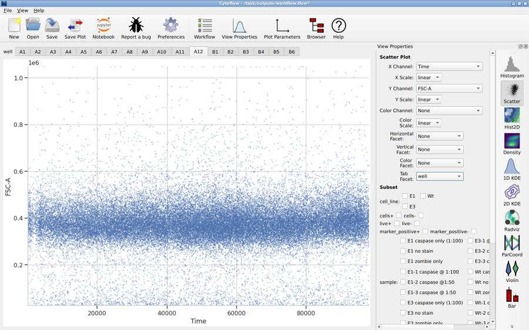
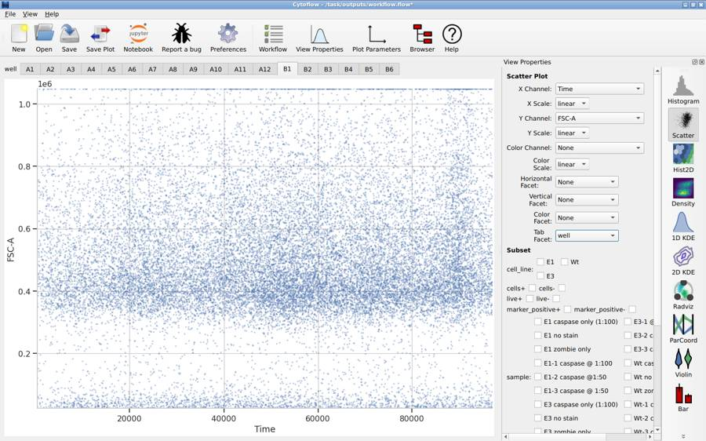
text(await tools.exec_command({cmd:"cu click 627 140 && sleep 1 && cu screenshot /tmp/qc_B2.png && cu click 669 140 && sleep 1 && cu screenshot /tmp/qc_B3.png && cu click 711 140 && sleep 1 && cu screenshot /tmp/qc_B4.png",max_output_tokens:2000}));
for (const p of ["/tmp/qc_B2.png","/tmp/qc_B3.png","/tmp/qc_B4.png"]) image((await tools.view_image({path:p})).image_url);
Script completed Wall time 3.6 seconds Output:
{"chunk_id":"5b8dbf","wall_time_seconds":3.421474874,"exit_code":0,"original_token_count":12,"output":"/tmp/qc_B2.png\n/tmp/qc_B3.png\n/tmp/qc_B4.png\n"}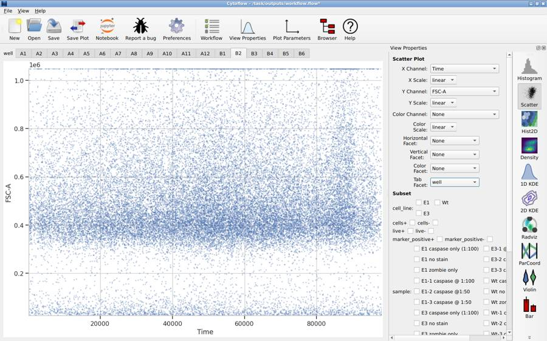
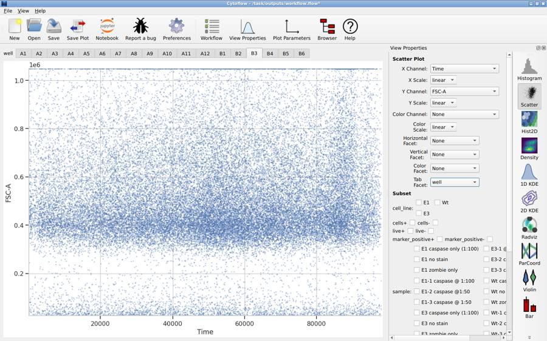
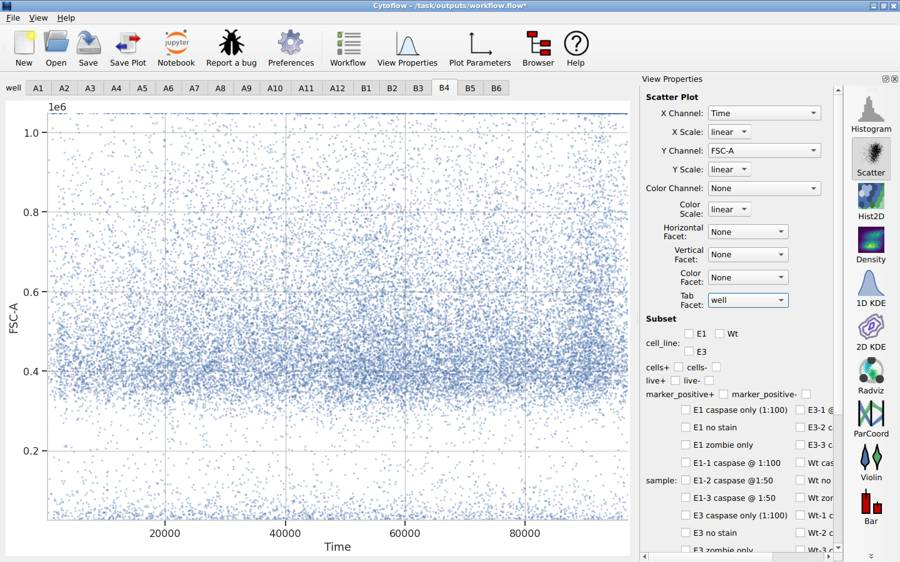
text(await tools.exec_command({cmd:"cu click 753 140 && sleep 1 && cu screenshot /tmp/qc_B5.png && cu click 795 140 && sleep 1 && cu screenshot /tmp/qc_B6.png",max_output_tokens:2000}));
for (const p of ["/tmp/qc_B5.png","/tmp/qc_B6.png"]) image((await tools.view_image({path:p})).image_url);
Script completed Wall time 2.4 seconds Output:
{"chunk_id":"9f9f65","wall_time_seconds":2.225282414,"exit_code":0,"original_token_count":8,"output":"/tmp/qc_B5.png\n/tmp/qc_B6.png\n"}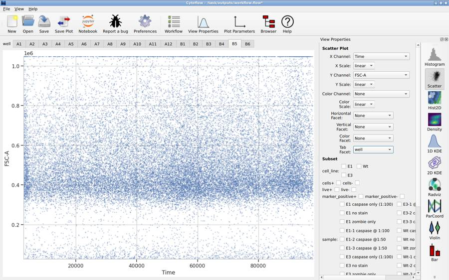
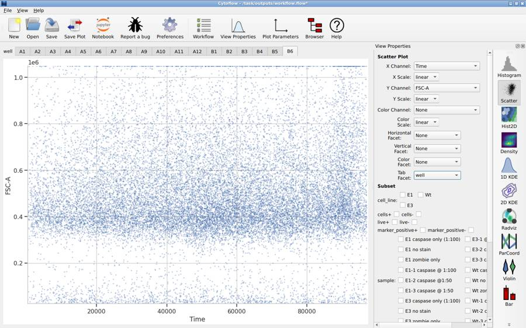
const results=await Promise.allSettled([
tools.web__run({search_query:[{q:'site.cellsignal.com 9669 cleaved caspase-3 Alexa Fluor 488 flow 1:50 staurosporine'},{q:'site.thermofisher.com cleaved caspase 3 flow cytometry camptothecin 10 uM 4 hours'}],response_length:"long"}),
tools.exec_command({cmd:"cu click 556 69 && cu click 45 175 && sleep 1 && cu scroll 477 758 down 15 && cu screenshot /tmp/screen.png",max_output_tokens:2000})
]); for(let i=0;i<results.length;i++) text({i,...results[i]});
image((await tools.view_image({path:"/tmp/screen.png"})).image_url);
Script completed Wall time 2.8 seconds Output:
{"i":0,"status":"fulfilled","value":"Cleaved Caspase-3 (Asp175) Antibody (Alexa Fluor® 488 Conjugate) | Cell Signaling Technology (https://www.cellsignal.com/products/antibody-conjugates/cleaved-caspase-3-asp175-antibody-alexa-fluor-488-conjugate/9669)\nciteturn0search0 [wordlim: 200] Published: 7 months ago; Crawled: last month; # Cleaved Caspase-3 (Asp175) Antibody (Alexa Fluor^{®} 488 Conjugate) #9669 ... Flow cytometric analysis of Jurkat cells, untreated (blue) or treated with etoposide #2200 (25 μM, overnight; green), using Cleaved Caspase-3 (Asp175) Antibody (Alexa Fluor^{®} 488 Conjugate) (solid lines) or concentration-matched Rabbit (DA1E) mAb IgG XP^{®} Isotype Control (Alexa Fluor^{®} 488 Conjugate) #2975 (dashed line).\n\n# Cleaved Caspase-3 (Asp175) Antibody (Alexa Fluor^{®} 488 Conjugate) #9669\n\nFilter:\n\n * F\n\nImage: Flow Cytometry Image 1: Cleaved Caspase-3 (Asp175) Antibody (Alexa Fluor® 488 Conjugate)\n\nFlow cytometric analysis of Jurkat cells, untreated (blue) or treated with etoposide #2200 (25 μM, overnight; green), using Cleaved Caspase-3 (Asp175) Antibody (Alexa Fluor^{®} 488 Conjugate) (solid lines) or concentration-matched Rabbit (DA1E) mAb IgG XP^{®} Isotype Control (Alexa Fluor^{®} 488 Conjugate) #2975 (dashed line).\n\nShow more\n\n1/1\n\nLearn more about how we get our images\n\nTo Purchase # 9669\n\nCat. # | Size | Qty. | Price\n--- | --- | --- | ---\n9669S | 100 µl 50 tests | [Input: 0] | $493\n\nCertificate of Analysis\n\n * Product Specifications\n * Related Products\n * Product Usage\n * Protocols\n * Background\n * Pathways\n\n### Product Specifications\n\nREACTIVITY | H M R Mk\nSENSITIVITY | Endogenous\nMW (kDa) | \nSOURCE | Rabbit\n\n##### Application Key:\n\n * F-Flow Cytometry \n\n##### Species Cross-Reactivity Key:\n\n * H-Human \n * M-Mouse \n * R-Rat \n * Mk-Monkey \n\n\n## Product Information\n\n### Product Description\n\nThis Cell Signaling Technology antibody is conjugated to Alexa Fluor^{®} 488 fluorescent dye and tested in-house for direct flow cytometry analysis in human cells. The antibody is expected to exhibit the same species cross-reactivity as the unconjugated Cleaved Caspase-3 (Asp175) Antibody #9661.\n\n### Product Usage Information\n\nApplication | Dilution\n--- | ---\nFlow Cytometry (Fixed/Permeabilized) | 1:50\n\n### Storage\n\nSupplied in PBS (pH 7.2), less than 0.1% sodium azide and 2 mg/ml BSA. Store at 4°C. Do not aliquot the antibody. Protect from light. Do not freeze.\n\n### Protocol\n\n[Select]\n\n### Specificity / Sensitivity\n\nCleaved Caspase-3 (Asp175) Antibody (Alexa Fluor^{®} 488 Conjugate) detects endogenous levels of the large fragment (17/19 kDa) of activated caspase-3 resulting from cleavage adjacent to aspartic acid 175. This antibody conjugate does not recognize full length caspase-3 or other cleaved caspases.\n\nSpecies Reactivity:\n\nHuman, Mouse, Rat, Monkey\n\nThe antigen sequence used to produce this antibody shares 100% sequence homology with the species listed here, but reactivity has not been tested or confirmed to work by CST. Use of this product with these species is not covered under our Product Performance Guarantee.\n\nSpecies predicted to react based on 100% sequence homology:\n\nBovine, Dog, Pig\n\n### Source / Purification\n\nPolyclonal antibodies are produced by immunizing animals with a synthetic peptide corresponding to amino-terminal residues adjacent to Asp175 of human caspase-3. Antibodies are purified by protein A and peptide affinity chromatography. The antibody was conjugated to Alexa Fluor^{®} 488 under optimal conditions with an F/P ratio of 2-6.\n\n### Background\n\nCaspase-3 (CPP-32, Apopain, Yama, SCA-1) is a critical executioner of apoptosis, as it is either partially or totally responsible for the proteolytic cleavage of many key proteins, such as the nuclear enzyme poly (ADP-ribose) polymerase (PARP) (1). Activation of caspase-3 requires proteolytic processing of its inactive zymogen into activated p17 and p12 fragments. Cleavage of caspase-3 requires the aspartic acid residue at the P1 position (2).\n\n 1. Fernandes-Alnemri, T. et al. (1994) J Biol Chem 269, 30761-4.\n 2. Nicholson, D.W. et al. (1995) Nature 376, 37-43.\n\n#### Alternate Names\n\nApopain; CASP-3; CASP3; caspase 3; caspase 3, apoptosis-related cysteine peptidase; caspase 3, apoptosis-related cysteine protease; Caspase-3; Caspase-3 subunit p12; Caspase-3 subunit p17; caspase3; CPP-32; CPP32; CPP32B; Cysteine protease CPP32; PARP cleavage protease; procaspase3; Protein Yama; SCA-1; SREBP cleavage activity 1; Yama\n\n### Database Links\n\nUniProt ID: P42574\n\nEntrez-Gene Id: 836\n--------------------------------------------------------------------------------\nCleaved Caspase-3 (Asp175) Antibody (Alexa Fluor® 488 Conjugate) (#9669) Datasheet With Images | Cell Signaling Technology (https://www.cellsignal.com/products/9669/datasheet?images=1&protocol=0)\nciteturn0search1 [wordlim: 200] Crawled: last month; #9669 ... This Cell Signaling Technology antibody is conjugated to Alexa Fluor^{®} 488 fluorescent dye and tested in-house for direct flow cytometry analysis in human cells. ... Flow cytometric analysis of Jurkat cells, untreated (blue) or treated with etoposide #2200 (25 μM, overnight; green), using Cleaved Caspase-3 (Asp175) Antibody (Alexa Fluor^{®} 488 Conjugate) (solid lines) or concentration-matched Rabbit (DA1E) mAb IgG XP^{®} Isotype Control (Alexa Fluor^{®} 488 Conjugate) #2975 (dashed line).\n\nRevision 4\n\n#9669\n\nStore at +4C\n\nCleaved Caspase-3 (Asp175) Antibody (Alexa Fluor^{®} 488 Conjugate)\n\nFor Research Use Only. Not for Use in Diagnostic Procedures.\n\nApplications:\nFC-FP\n\nReactivity:\nH M R Mk\n\nSensitivity:\nEndogenous\n\nSource/Isotype:\nRabbit\n\nUniProt ID:\n#P42574\n\nEntrez-Gene Id:\n836\n\n### Product Usage Information\n\nApplication | Dilution\n--- | ---\nFlow Cytometry (Fixed/Permeabilized) | 1:50\n\n### Storage\n\nSupplied in PBS (pH 7.
… [22,430 more characters not shown]{"i":1,"status":"fulfilled","value":{"chunk_id":"3c4a61","wall_time_seconds":2.6152167840000002,"exit_code":0,"original_token_count":4,"output":"/tmp/screen.png\n"}}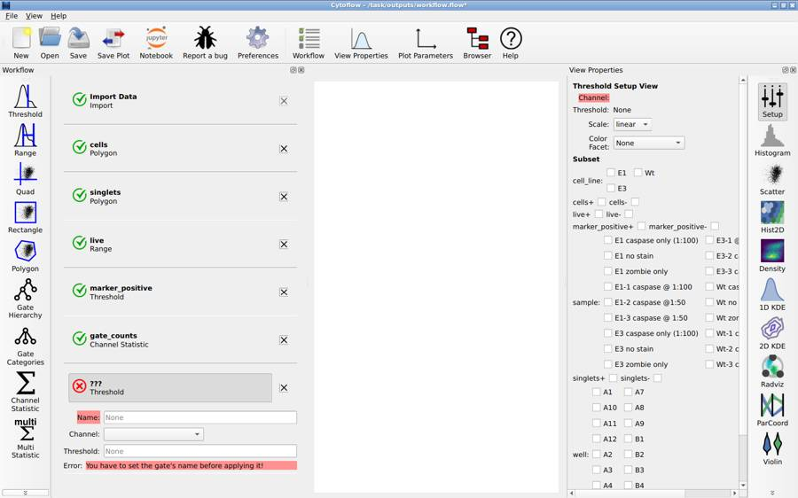
text(await tools.exec_command({cmd:"cu click 294 754 && cu key ctrl+a && cu type fsc_ceiling && cu click 355 785 && cu key f && cu key Return && cu click 302 814 && cu key ctrl+a && cu type 1040000 && cu key Tab && sleep 1 && cu click 45 174 && sleep 1 && cu scroll 480 748 down 7 && cu screenshot /tmp/screen.png",max_output_tokens:2000}));
image((await tools.view_image({path:"/tmp/screen.png"})).image_url);
Script completed Wall time 3.8 seconds Output:
{"chunk_id":"db9463","wall_time_seconds":3.58490542,"exit_code":0,"original_token_count":4,"output":"/tmp/screen.png\n"}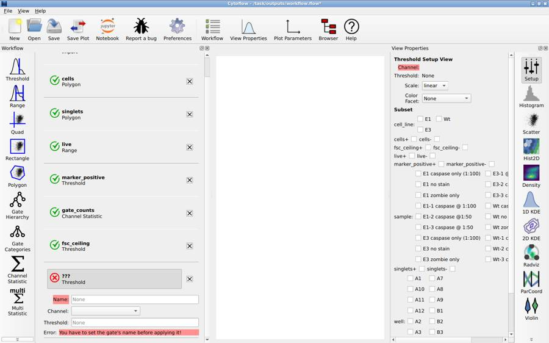
text(await tools.exec_command({cmd:"cu click 302 785 && cu key ctrl+a && cu type ssc_ceiling && cu click 356 817 && cu key s && cu key Return && cu click 299 845 && cu key ctrl+a && cu type 1040000 && cu key Tab && sleep 1 && cu click 45 695 && sleep 1 && cu scroll 482 744 down 9 && cu screenshot /tmp/screen.png",max_output_tokens:2000}));
image((await tools.view_image({path:"/tmp/screen.png"})).image_url);
Script completed Wall time 4.0 seconds Output:
{"chunk_id":"c77c91","wall_time_seconds":3.784303155,"exit_code":0,"original_token_count":4,"output":"/tmp/screen.png\n"}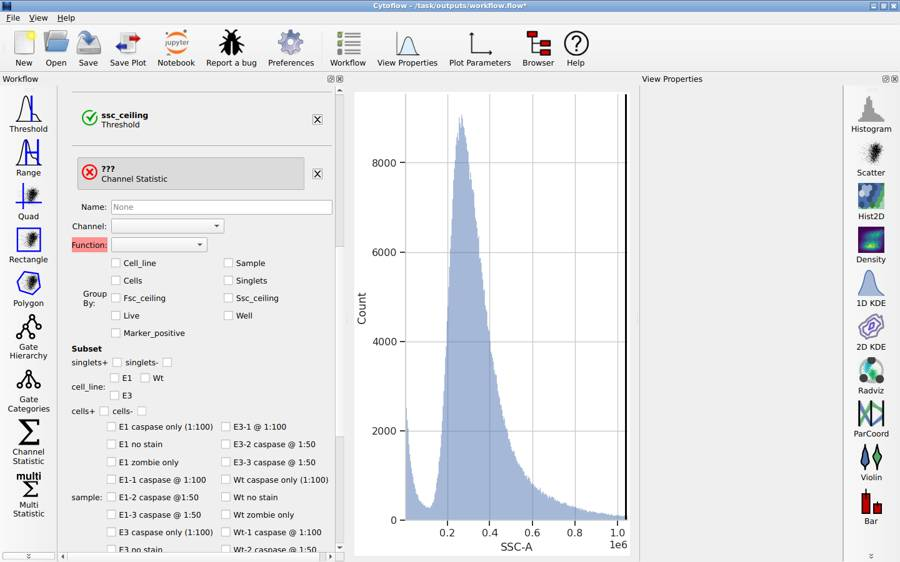
text(await tools.exec_command({cmd:"cu click 290 331 && cu key ctrl+a && cu type qc_counts && cu click 348 362 && cu key f && cu key Return && cu click 319 391 && cu key Home && cu key Return && cu click 185 449 && cu click 185 477 && cu click 365 477 && cu click 365 505 && cu click 1394 889 && cu screenshot /tmp/screen.png",max_output_tokens:2000}));
image((await tools.view_image({path:"/tmp/screen.png"})).image_url);
Script completed Wall time 1.2 seconds Output:
{"chunk_id":"6c9181","wall_time_seconds":1.044697348,"exit_code":0,"original_token_count":4,"output":"/tmp/screen.png\n"}text(await tools.exec_command({cmd:"cu click 1395 889 && cu screenshot /tmp/screen.png",max_output_tokens:2000}));
image((await tools.view_image({path:"/tmp/screen.png"})).image_url);
Script completed Wall time 0.2 seconds Output:
{"chunk_id":"dff0d7","wall_time_seconds":0.00000443,"exit_code":0,"original_token_count":4,"output":"/tmp/screen.png\n"}text(await tools.exec_command({cmd:"sleep 1 && cu screenshot /tmp/screen.png",max_output_tokens:2000}));
image((await tools.view_image({path:"/tmp/screen.png"})).image_url);
Script completed Wall time 1.1 seconds Output:
{"chunk_id":"e34448","wall_time_seconds":0.897184564,"exit_code":0,"original_token_count":4,"output":"/tmp/screen.png\n"}text(await tools.exec_command({cmd:"cu click 1395 889 && sleep 1 && cu screenshot /tmp/screen.png",max_output_tokens:2000}));
image((await tools.view_image({path:"/tmp/screen.png"})).image_url);
Script completed Wall time 1.2 seconds Output:
{"chunk_id":"373d60","wall_time_seconds":1.001948665,"exit_code":0,"original_token_count":4,"output":"/tmp/screen.png\n"}text(await tools.exec_command({cmd:"cu click 1400 522 && sleep 1 && cu click 1190 181 && cu key End && cu key Return && sleep 1 && cu click 1149 210 && cu paste /task/outputs/qc_counts_export.csv && cu screenshot /tmp/screen.png",max_output_tokens:2000}));
image((await tools.view_image({path:"/tmp/screen.png"})).image_url);
Script completed Wall time 3.7 seconds Output:
{"chunk_id":"8a197d","wall_time_seconds":3.5722911059999998,"exit_code":0,"original_token_count":4,"output":"/tmp/screen.png\n"}text(await tools.exec_command({cmd:"cu click 982 566 && cu key ctrl+s && sleep 1 && python3 - <<'PY'\nimport pandas as pd\nx=pd.read_csv('/task/outputs/qc_counts_export.csv'); n='FSC-A'\nr=[]\nfor w,z in x.groupby('well',sort=False):\n total=z[n].sum(); f=z.loc[z.fsc_ceiling==1,n].sum(); s=z.loc[z.ssc_ceiling==1,n].sum(); either=z.loc[(z.fsc_ceiling==1)|(z.ssc_ceiling==1),n].sum(); inside=z.loc[(z.cells==1)&((z.fsc_ceiling==1)|(z.ssc_ceiling==1)),n].sum()\n r.append([w,int(total),int(f),int(s),int(either),either/total*100,int(inside)])\na=pd.DataFrame(r,columns=['well','all_events','fsc_ceiling','ssc_ceiling','either_ceiling','pct_either_ceiling','inside_cells']); a.to_csv('/task/outputs/qc_summary.csv',index=False);print(a.to_string(index=False))\nPY",max_output_tokens:5000}));
Script completed
Wall time 1.3 seconds
Output:
{"chunk_id":"6b4519","wall_time_seconds":1.17022941,"exit_code":0,"original_token_count":442,"output":"well all_events fsc_ceiling ssc_ceiling either_ceiling pct_either_ceiling inside_cells\n A1 6969 9 14 22 0.315684 0\n A10 58936 60 62 101 0.171372 0\n A11 51193 40 50 80 0.156271 0\n A12 51047 30 49 70 0.137129 0\n A2 3149 3 12 12 0.381073 0\n A3 5742 9 14 19 0.330895 0\n A4 20776 69 48 99 0.476511 0\n A5 13119 19 19 32 0.243921 0\n A6 21946 41 31 63 0.287068 0\n A7 33911 18 33 43 0.126803 0\n A8 52749 38 55 79 0.149766 0\n A9 49297 38 43 64 0.129825 0\n B1 26935 817 1001 1227 4.555411 0\n B2 36048 1094 1221 1507 4.180537 0\n B3 46022 1769 1880 2363 5.134501 0\n B4 27503 964 1039 1323 4.810384 0\n B5 37596 1400 1480 1891 5.029790 0\n B6 24797 701 840 1015 4.093237 0\n"}text(await tools.exec_command({cmd:"cu click 45 696 && sleep 1 && cu scroll 476 756 down 13 && cu screenshot /tmp/screen.png",max_output_tokens:2000}));
image((await tools.view_image({path:"/tmp/screen.png"})).image_url);
Script completed Wall time 2.5 seconds Output:
{"chunk_id":"9459fd","wall_time_seconds":2.305049943,"exit_code":0,"original_token_count":4,"output":"/tmp/screen.png\n"}text(await tools.exec_command({cmd:"cu click 187 164 && cu click 166 242 && cu click 161 835 && cu scroll 471 329 up 9 && cu screenshot /tmp/screen.png",max_output_tokens:2000}));
image((await tools.view_image({path:"/tmp/screen.png"})).image_url);
Script completed Wall time 1.3 seconds Output:
{"chunk_id":"a2c05d","wall_time_seconds":1.112084252,"exit_code":0,"original_token_count":4,"output":"/tmp/screen.png\n"}text(await tools.exec_command({cmd:"cu click 293 477 && cu key ctrl+a && cu type caspase_median && cu click 348 509 && cu key Home && cu key Return && cu click 319 537 && cu key End && cu key Up && cu key Up && cu key Return && cu click 365 650 && sleep 1 && cu click 1395 889 && sleep 1 && cu screenshot /tmp/screen.png",max_output_tokens:2000}));
image((await tools.view_image({path:"/tmp/screen.png"})).image_url);
Script completed Wall time 3.1 seconds Output:
{"chunk_id":"24421c","wall_time_seconds":2.8984961350000003,"exit_code":0,"original_token_count":4,"output":"/tmp/screen.png\n"}text(await tools.exec_command({cmd:"cu click 1400 524 && sleep 1 && cu click 1191 181 && cu key Home && cu key Return && sleep 1 && cu screenshot /tmp/screen.png",max_output_tokens:2000}));
image((await tools.view_image({path:"/tmp/screen.png"})).image_url);
Script completed Wall time 2.3 seconds Output:
{"chunk_id":"48368e","wall_time_seconds":2.1363433179999998,"exit_code":0,"original_token_count":4,"output":"/tmp/screen.png\n"}text(await tools.exec_command({cmd:"cu click 1215 181 && cu key Home && cu key Down && cu key Return && sleep 1 && cu screenshot /tmp/screen.png",max_output_tokens:2000}));
image((await tools.view_image({path:"/tmp/screen.png"})).image_url);
Script completed Wall time 1.2 seconds Output:
{"chunk_id":"7525bd","wall_time_seconds":1.046811667,"exit_code":0,"original_token_count":4,"output":"/tmp/screen.png\n"}text(await tools.exec_command({cmd:"cu click 1152 210 && cu paste /task/outputs/caspase_median_export.csv && cu click 981 567 && cu key ctrl+s && sleep 1 && cat /task/outputs/caspase_median_export.csv",max_output_tokens:3000}));
Script completed
Wall time 2.6 seconds
Output:
{"chunk_id":"d478a4","wall_time_seconds":2.422443578,"exit_code":0,"original_token_count":46,"output":"well,AAV-GFP-GFP-A\nA1,252.0\nA10,276.0\nA11,293.0\nA12,290.0\nA2,288.0\nA3,242.0\nA4,286.0\nA5,310.0\nA6,318.0\nA7,261.0\nA8,274.0\nA9,254.0\nB1,393.0\nB2,440.0\nB3,386.0\nB4,422.0\nB5,464.0\nB6,459.0\n"}text(await tools.exec_command({cmd:"cu click 44 174 && sleep 1 && cu scroll 471 749 down 15 && cu screenshot /tmp/screen.png",max_output_tokens:2000}));
image((await tools.view_image({path:"/tmp/screen.png"})).image_url);
Script completed Wall time 2.7 seconds Output:
{"chunk_id":"fe3fa0","wall_time_seconds":2.5097932050000002,"exit_code":0,"original_token_count":4,"output":"/tmp/screen.png\n"}text(await tools.exec_command({cmd:"cu click 294 785 && cu key ctrl+a && cu type caspase_2000 && cu click 356 816 && cu key Home && cu key Return && cu click 292 845 && cu key ctrl+a && cu type 2000 && cu key Tab && sleep 1 && cu click 44 174 && sleep 1 && cu scroll 475 750 down 10 && cu screenshot /tmp/screen.png",max_output_tokens:2000}));
image((await tools.view_image({path:"/tmp/screen.png"})).image_url);
Script completed Wall time 4.0 seconds Output:
{"chunk_id":"d2cde9","wall_time_seconds":3.828955467,"exit_code":0,"original_token_count":4,"output":"/tmp/screen.png\n"}text(await tools.exec_command({cmd:"cu click 294 785 && cu key ctrl+a && cu type caspase_4000 && cu click 356 816 && cu key Home && cu key Return && cu click 292 845 && cu key ctrl+a && cu type 4000 && cu key Tab && sleep 1 && cu click 45 695 && sleep 1 && cu scroll 476 749 down 11 && cu screenshot /tmp/screen.png",max_output_tokens:2000}));
image((await tools.view_image({path:"/tmp/screen.png"})).image_url);
Script completed Wall time 4.1 seconds Output:
{"chunk_id":"36946d","wall_time_seconds":3.929864248,"exit_code":0,"original_token_count":4,"output":"/tmp/screen.png\n"}text(await tools.exec_command({cmd:"cu click 298 205 && cu key ctrl+a && cu type sensitivity_counts && cu click 348 236 && cu key f && cu key Return && cu click 320 267 && cu key Home && cu key Return && cu click 185 296 && cu click 185 324 && cu click 365 408 && cu click 187 527 && cu click 166 606 && cu scroll 473 744 down 7 && cu screenshot /tmp/screen.png",max_output_tokens:2000}));
image((await tools.view_image({path:"/tmp/screen.png"})).image_url);
Script completed Wall time 2.2 seconds Output:
{"chunk_id":"80037d","wall_time_seconds":1.97787676,"exit_code":0,"original_token_count":4,"output":"/tmp/screen.png\n"}text(await tools.exec_command({cmd:"cu click 161 858 && cu click 1395 889 && sleep 1 && cu screenshot /tmp/screen.png",max_output_tokens:2000}));
image((await tools.view_image({path:"/tmp/screen.png"})).image_url);
Script completed Wall time 1.3 seconds Output:
{"chunk_id":"306655","wall_time_seconds":1.105889535,"exit_code":0,"original_token_count":4,"output":"/tmp/screen.png\n"}text(await tools.exec_command({cmd:"cu click 1400 522 && sleep 1 && cu click 1191 181 && cu key End && cu key Return && sleep 1 && cu click 1149 210 && cu paste /task/outputs/sensitivity_counts_export.csv && cu screenshot /tmp/screen.png",max_output_tokens:2000}));
image((await tools.view_image({path:"/tmp/screen.png"})).image_url);
Script completed Wall time 3.8 seconds Output:
{"chunk_id":"25ab9d","wall_time_seconds":3.579091793,"exit_code":0,"original_token_count":4,"output":"/tmp/screen.png\n"}text(await tools.exec_command({cmd:"cu click 979 568 && cu key ctrl+s && sleep 1 && python3 - <<'PY'\nimport pandas as pd\nx=pd.read_csv('/task/outputs/sensitivity_counts_export.csv')\nc=pd.read_csv('/task/outputs/counts.csv'); den=c[c.population=='live'].set_index('well')['count']\nr=[]\nfor w,z in x.groupby('well'):\n n=z['FSC-A'].sum(); assert n==den[w],(w,n,den[w])\n r.append([w,n,*[100*z.loc[z[p]==1,'FSC-A'].sum()/n for p in ['caspase_2000','caspase_4000']]])\nprint(pd.DataFrame(r,columns=['well','live','pct_2000','pct_4000']).to_string(index=False))\nPY",max_output_tokens:4000}));
Script completed
Wall time 1.3 seconds
Output:
{"chunk_id":"fc6326","wall_time_seconds":1.174478218,"exit_code":0,"original_token_count":157,"output":"well live pct_2000 pct_4000\n A1 6167.0 0.048646 0.000000\n A10 52650.0 0.163343 0.106363\n A11 45670.0 0.186118 0.142325\n A12 44893.0 0.271757 0.193794\n A2 2466.0 0.770479 0.486618\n A3 4935.0 0.000000 0.000000\n A4 18557.0 0.431104 0.264051\n A5 11978.0 0.584405 0.459175\n A6 19756.0 0.617534 0.465681\n A7 31143.0 0.003211 0.000000\n A8 48274.0 0.157435 0.113933\n A9 44151.0 0.009060 0.000000\n B1 21632.0 0.725777 0.046228\n B2 29552.0 2.145371 0.815512\n B3 37135.0 0.875185 0.048472\n B4 22124.0 2.079190 0.836196\n B5 30968.0 1.905192 0.581245\n B6 20181.0 1.868094 0.659036\n"}text(await tools.exec_command({cmd:"python3 - <<'PY'\nimport pandas as pd\nx=pd.read_csv('/task/outputs/gate_counts_export.csv')\nr=[]\nfor w,z in x[(x.cells==1)&(x.singlets==1)].groupby('well'):\n n=z['FSC-A'].sum(); pos=z.loc[z.marker_positive==1,'FSC-A'].sum(); d=z.loc[z.live==0,'FSC-A'].sum();dp=z.loc[(z.live==0)&(z.marker_positive==1),'FSC-A'].sum()\n r.append([w,int(n),int(pos),100*pos/n,int(d),int(dp)])\nprint(pd.DataFrame(r,columns=['well','singlets','positive_before_live','pct_positive_before_live','zombie_high','positive_zombie_high']).to_string(index=False))\nPY",max_output_tokens:3000}));
text(await tools.clock__curr_time({}));
Script completed
Wall time 0.2 seconds
Output:
{"chunk_id":"3b8c62","wall_time_seconds":0.086447067,"exit_code":0,"original_token_count":466,"output":"well singlets positive_before_live pct_positive_before_live zombie_high positive_zombie_high\n A1 6167 0 0.000000 0 0\n A10 53498 66 0.123369 848 1\n A11 46404 70 0.150849 734 0\n A12 45858 105 0.228968 965 0\n A2 2466 16 0.648824 0 0\n A3 4985 0 0.000000 50 0\n A4 18727 65 0.347092 170 0\n A5 12060 63 0.522388 82 0\n A6 20036 107 0.534039 280 2\n A7 31143 1 0.003211 0 0\n A8 48274 65 0.134648 0 0\n A9 44879 0 0.000000 728 0\n B1 21632 28 0.129438 0 0\n B2 29552 321 1.086221 0 0\n B3 37625 64 0.170100 490 0\n B4 22469 251 1.117095 345 3\n B5 31393 235 0.748575 425 3\n B6 20499 174 0.848822 318 1\n"}
{"current_time":"2026-11-06 00:44:45 UTC"}text(await tools.exec_command({cmd:"python3 - <<'PY'\nimport pandas as pd\nfrom pathlib import Path\np=Path('/task/outputs')\nc=pd.read_csv(p/'counts.csv'); t=c.pivot(index='well',columns='population',values='count')\nraw=100*t.marker_positive/t.live\nm=pd.read_csv(p/'caspase_median_export.csv').set_index('well').iloc[:,0]\nfor line,ref,one,two in [('WT','A3','A4',['A5','A6']),('E1','A9','A10',['A11','A12']),('E3','B3','B4',['B5','B6'])]:\n print(line,'FMO',raw[ref],'100 raw/net',raw[one],raw[one]-raw[ref], '50 raw/net',raw[two].mean(),raw[two].mean()-raw[ref],'SD',raw[two].std(), 'med ratios',m[one]/m[ref],(m[two]/m[ref]).mean())\nPY",max_output_tokens:3000}));
Script completed
Wall time 0.3 seconds
Output:
{"chunk_id":"e6a5a8","wall_time_seconds":0.095648914,"exit_code":0,"original_token_count":142,"output":"WT FMO 0.0 100 raw/net 0.3502721345044997 0.3502721345044997 50 raw/net 0.5287241869593478 0.5287241869593478 SD 0.0039031150717745897 med ratios 1.1818181818181819 1.2975206611570247\nE1 FMO 0.0 100 raw/net 0.12345679012345678 0.12345679012345678 50 raw/net 0.19358147710305562 0.19358147710305562 SD 0.05700411096057574 med ratios 1.0866141732283465 1.1476377952755905\nE3 FMO 0.17234414972398007 100 raw/net 1.1209546194178268 0.9486104696938468 50 raw/net 0.8032011919613932 0.6308570422374131 SD 0.07642518744845704 med ratios 1.0932642487046633 1.1955958549222798\n"}text(await tools.apply_patch("*** Begin Patch\n*** Add File: /task/outputs/analyse_exports.py\n+\"\"\"Tabulate Cytoflow GUI exports. Does not open or parse FCS files.\"\"\"\n+from pathlib import Path\n+import json\n+import numpy as np\n+import pandas as pd\n+import matplotlib\n+matplotlib.use('Agg')\n+import matplotlib.pyplot as plt\n+from matplotlib.lines import Line2D\n+\n+OUT = Path(__file__).resolve().parent\n+layout = pd.read_csv('/task/inputs/plate_layout.csv')\n+gate = pd.read_csv(OUT / 'gate_counts_export.csv')\n+qc = pd.read_csv(OUT / 'qc_counts_export.csv')\n+sens = pd.read_csv(OUT / 'sensitivity_counts_export.csv')\n+med = pd.read_csv(OUT / 'caspase_median_export.csv').set_index('well')['AAV-GFP-GFP-A']\n+count_col = 'FSC-A'\n+\n+# Intersections are sums of mutually exclusive bins counted by Cytoflow.\n+rows = []\n+for sample in layout.itertuples(index=False):\n+ bins = gate[gate.well.eq(sample.well)]\n+ parent = 'none'\n+ parent_count = None\n+ values = {}\n+ for pop, role in [('all_events', 'other'), ('cells', 'cells'),\n+ ('singlets', 'singlets'), ('live', 'live'),\n+ ('marker_positive', 'marker_positive')]:\n+ if pop != 'all_events':\n+ bins = bins[bins[pop].eq(1)]\n+ n = int(bins[count_col].sum())\n+ values[pop] = n\n+ pct = np.nan if parent_count in (None, 0) else 100 * n / parent_count\n+ rows.append([sample.file, sample.well, pop, role, parent, n, pct])\n+ parent, parent_count = pop, n\n+ q = qc[qc.well.eq(sample.well)]\n+ s = sens[sens.well.eq(sample.well)]\n+ assert int(q[count_col].sum()) == values['all_events']\n+ assert int(s[count_col].sum()) == values['live']\n+ for pop in ['fsc_ceiling', 'ssc_ceiling']:\n+ n = int(q.loc[q[pop].eq(1), count_col].sum())\n+ rows.append([sample.file, sample.well, pop, 'other', 'all_events',\n+ n, 100 * n / values['all_events']])\n+ for pop in ['caspase_2000', 'caspase_4000']:\n+ n = int(s.loc[s[pop].eq(1), count_col].sum())\n+ rows.append([sample.file, sample.well, pop, 'other', 'live',\n+ n, 100 * n / values['live']])\n+counts = pd.DataFrame(rows, columns=['file', 'well', 'population', 'role',\n+ 'parent', 'count', 'pct_of_parent'])\n+counts.to_csv(OUT / 'counts.csv', index=False, float_format='%.10g')\n+wide = counts.pivot(index='well', columns='population', values='count')\n+raw = 100 * wide.marker_positive / wide.live\n+\n+design = {\n+ 'WT': {'unstained': ['A1'], 'antibody_only': ['A2'], 'zombie_only': ['A3'],\n+ '1:100': ['A4'], '1:50': ['A5', 'A6']},\n+ 'E1': {'unstained': ['A7'], 'antibody_only': ['A8'], 'zombie_only': ['A9'],\n+ '1:100': ['A10'], '1:50': ['A11', 'A12']},\n+ 'E3': {'unstained': ['B1'], 'antibody_only': ['B2'], 'zombie_only': ['B3'],\n+ '1:100': ['B4'], '1:50': ['B5', 'B6']},\n+}\n+\n+qc_rows, flag_rows = [], []\n+for sample in layout.itertuples(index=False):\n+ q = qc[qc.well.eq(sample.well)]\n+ clip = q.fsc_ceiling.eq(1) | q.ssc_ceiling.eq(1)\n+ total = int(q[count_col].sum())\n+ union = int(q.loc[clip, count_col].sum())\n+ in_cells = int(q.loc[clip & q.cells.eq(1), count_col].sum())\n+ fsc = int(q.loc[q.fsc_ceiling.eq(1), count_col].sum())\n+ ssc = int(q.loc[q.ssc_ceiling.eq(1), count_col].sum())\n+ qc_rows.append([sample.well, total, fsc, ssc, union, 100*union/total, in_cells])\n+ if sample.cell_line == 'E3':\n+ issue, decision = 'saturation', 'keep_with_note'\n+ evidence = (f'Scatter pile-up at the upper scale in GUI. FSC-A > 1040000: {fsc}; '\n+ f'SSC-A > 1040000: {ssc}; either: {union}/{total} '\n+ f'({100*union/total:.3f}%). Of these, {in_cells} enter cells. '\n+ f'Retain the interior gated population; broad E3 scatter and truncation limit comparisons.')\n+ elif sample.well == 'A2':\n+ issue, decision = 'too_few_events', 'keep_with_note'\n+ evidence = ('Only 3149 total events and 2466 gated singlets; 16 caspase-positive events '\n+ '(0.649%). Time-versus-FSC is stable across approximately 0-98000 recorded '\n+ 'Time units. Retain as an auxiliary antibody-only control with limited rare-event '\n+ 'precision; do not pool with dual-stained assay wells.')\n+ else:\n+ issue, decision = 'none', 'keep'\n+ evidence = (f'{total} total events; {int(wide.loc[sample.well, \"live\"])} in the '\n+ 'operational live gate. No material time discontinuity on visual review.')\n+ flag_rows.append([sample.file, sample.well, issue, evidence, decision])\n+pd.DataFrame(qc_rows, columns=['well','all_events','fsc_ceiling','ssc_ceiling',\n+ 'either_ceiling','pct_either_ceiling','inside_cells']).to_csv(\n+ OUT / 'qc_summary.csv', index=False)\n+flags = pd.DataFrame(flag_rows, columns=['file','well','issue_type','evidence','decision'])\n+flags.to_csv(OUT / 'flags.csv', index=False)\n+\n+summary_rows, median_rows, well_rows, sensitivity_rows = [], [], [], []\n+for line, d in design.items():\n+ fmo = d['zombie_only'][0]\n+ for dilution in ['1:100', '1:50']:\n+ wells = d[dilution]\n+ condition = f'{line}_dual_{dilution}'\n+ values = raw.loc[wells] - raw[fmo]\n+ formula = (f'100 * (marker_positive/live)_well - '\n+ f'100 * (marker_positive/live)_{fmo}')\n+ summary_rows.append([condition, ';'.join(wells), len(wells), values.mean(),\n+ values.std(ddof=1) if len(wells)>1 else np.nan,\n+ '100 * marker_positive / live (%); background-adjusted result in percentage points',\n+ formula])\n+ ratios = med.loc[wells] / med[fmo]\n+ median_rows.append([conditi
… [11,411 more characters not shown]Script completed Wall time 1.0 seconds Output:
{}{"chunk_id":"263958","wall_time_seconds":0.849061944,"exit_code":0,"original_token_count":850,"output":" condition wells n_wells_used mean sd metric_definition normalisation_applied\n WT_dual_1:100 A4 1 0.350272 NaN 100 * marker_positive / live (%); background-adjusted result in percentage points 100 * (marker_positive/live)_well - 100 * (marker_positive/live)_A3\n WT_dual_1:50 A5;A6 2 0.528724 0.003903 100 * marker_positive / live (%); background-adjusted result in percentage points 100 * (marker_positive/live)_well - 100 * (marker_positive/live)_A3\n WT_unstained A1 1 0.000000 NaN 100 * marker_positive / live (% of gated singlets in the operational live range) none\nWT_antibody_only A2 1 0.648824 NaN 100 * marker_positive / live (% of gated singlets in the operational live range) none\n WT_zombie_only A3 1 0.000000 NaN 100 * marker_positive / live (% of gated singlets in the operational live range) none\n E1_dual_1:100 A10 1 0.123457 NaN 100 * marker_positive / live (%); background-adjusted result in percentage points 100 * (marker_positive/live)_well - 100 * (marker_positive/live)_A9\n E1_dual_1:50 A11;A12 2 0.193581 0.057004 100 * marker_positive / live (%); background-adjusted result in percentage points 100 * (marker_positive/live)_well - 100 * (marker_positive/live)_A9\n E1_unstained A7 1 0.003211 NaN 100 * marker_positive / live (% of gated singlets in the operational live range) none\nE1_antibody_only A8 1 0.134648 NaN 100 * marker_positive / live (% of gated singlets in the operational live range) none\n E1_zombie_only A9 1 0.000000 NaN 100 * marker_positive / live (% of gated singlets in the operational live range) none\n E3_dual_1:100 B4 1 0.948610 NaN 100 * marker_positive / live (%); background-adjusted result in percentage points 100 * (marker_positive/live)_well - 100 * (marker_positive/live)_B3\n E3_dual_1:50 B5;B6 2 0.630857 0.076425 100 * marker_positive / live (%); background-adjusted result in percentage points 100 * (marker_positive/live)_well - 100 * (marker_positive/live)_B3\n E3_unstained B1 1 0.129438 NaN 100 * marker_positive / live (% of gated singlets in the operational live range) none\nE3_antibody_only B2 1 1.086221 NaN 100 * marker_positive / live (% of gated singlets in the operational live range) none\n E3_zombie_only B3 1 0.172344 NaN 100 * marker_positive / live (% of gated singlets in the operational live range) none\nValidated: 18 files, 9 populations, 162 count rows, 15 conditions; no excluded wells.\n"}text(await tools.exec_command({cmd:"python3 - <<'PY'\nimport pandas as pd\np='/task/outputs/'\nc=pd.read_csv(p+'counts.csv');t=c.pivot(index='well',columns='population',values='count')\nprint(c.groupby('population')['count'].sum().to_string())\nw=pd.read_csv(p+'well_metrics.csv');print(w.to_string(index=False))\ns=pd.read_csv(p+'threshold_sensitivity.csv'); print(s.to_string(index=False))\nprint('live fraction dual',100*t.loc[w.well,'live']/t.loc[w.well,'singlets'])\nPY",max_output_tokens:5000}));
Script completed
Wall time 0.2 seconds
Output:
{"chunk_id":"2728fd","wall_time_seconds":0.034440667,"exit_code":0,"original_token_count":942,"output":"population\nall_events 567735\ncaspase_2000 3211\ncaspase_4000 1238\ncells 518792\nfsc_ceiling 7119\nlive 492232\nmarker_positive 1621\nsinglets 497667\nssc_ceiling 7891\nwell cell_line dilution live_count marker_positive_count raw_positive_pct background_well background_positive_pct adjusted_positive_pp median_BL1 median_fold_over_background\n A4 WT 1:100 18557 65 0.350272 A3 0.000000 0.350272 286 1.181818\n A5 WT 1:50 11978 63 0.525964 A3 0.000000 0.525964 310 1.280992\n A6 WT 1:50 19756 105 0.531484 A3 0.000000 0.531484 318 1.314050\n A10 E1 1:100 52650 65 0.123457 A9 0.000000 0.123457 276 1.086614\n A11 E1 1:50 45670 70 0.153273 A9 0.000000 0.153273 293 1.153543\n A12 E1 1:50 44893 105 0.233889 A9 0.000000 0.233889 290 1.141732\n B4 E3 1:100 22124 248 1.120955 B3 0.172344 0.948610 422 1.093264\n B5 E3 1:50 30968 232 0.749160 B3 0.172344 0.576816 464 1.202073\n B6 E3 1:50 20181 173 0.857242 B3 0.172344 0.684898 459 1.189119\n condition BL1_threshold wells adjusted_mean_pp sd_pp background_pct\nWT_dual_1:100 2000 A4 0.431104 NaN 0.000000\nWT_dual_1:100 3000 A4 0.350272 NaN 0.000000\nWT_dual_1:100 4000 A4 0.264051 NaN 0.000000\n WT_dual_1:50 2000 A5;A6 0.600969 0.023426 0.000000\n WT_dual_1:50 3000 A5;A6 0.528724 0.003903 0.000000\n WT_dual_1:50 4000 A5;A6 0.462428 0.004601 0.000000\nE1_dual_1:100 2000 A10 0.154283 NaN 0.009060\nE1_dual_1:100 3000 A10 0.123457 NaN 0.000000\nE1_dual_1:100 4000 A10 0.106363 NaN 0.000000\n E1_dual_1:50 2000 A11;A12 0.219878 0.060556 0.009060\n E1_dual_1:50 3000 A11;A12 0.193581 0.057004 0.000000\n E1_dual_1:50 4000 A11;A12 0.168060 0.036394 0.000000\nE3_dual_1:100 2000 B4 1.204005 NaN 0.875185\nE3_dual_1:100 3000 B4 0.948610 NaN 0.172344\nE3_dual_1:100 4000 B4 0.787724 NaN 0.048472\n E3_dual_1:50 2000 B5;B6 1.011458 0.026233 0.875185\n E3_dual_1:50 3000 B5;B6 0.630857 0.076425 0.172344\n E3_dual_1:50 4000 B5;B6 0.571669 0.055006 0.048472\nlive fraction dual well\nA4 99.092220\nA5 99.320066\nA6 98.602515\nA10 98.414894\nA11 98.418240\nA12 97.895678\nB4 98.464551\nB5 98.646195\nB6 98.448705\ndtype: float64\n"}text(await tools.apply_patch("*** Begin Patch\n*** Add File: /task/outputs/report.md\n+## Question\n+\n+Can this intracellular flow assay provide a useful caspase readout in H4 cells before transfer to iPSC-derived neurons? The plate also permits an exploratory comparison of final antibody dilutions 1:100 and 1:50, and of WT with the PGRN-KO E1 and E3 clones at matched dilution.\n+\n+**Answer: partial.** Small staining shifts and rare events above the negative-control threshold are measurable, but this basal plate does not establish assay sensitivity or an optimal dilution. It does not show a consistent increase in both KO clones. The assay needs validation with an induced-apoptosis positive control before neuronal or rescue experiments.\n+\n+The reagent actually used was CST #9669, an Alexa Fluor 488 antibody to cleaved caspase-3, together with Zombie NIR. This is an endpoint measure of a cleavage-associated epitope, not a direct catalytic activity measurement, total caspase abundance, or the CellEvent caspase-3/7 assay listed in the entry-level materials. The manufacturer's specificity statement supports this distinction. [CST #9669](https://www.cellsignal.com/products/antibody-conjugates/cleaved-caspase-3-asp175-antibody-alexa-fluor-488-conjugate/9669)\n+\n+## Methods\n+\n+All 18 files were imported through the supplied Cytoflow workflow. **Events per sample remained unset**, giving 567,735 total events. All gates and event counts were generated in the Cytoflow GUI. The saved [workflow](workflow.flow) contains the gate operations and Channel Statistics. Python was used only to tabulate the exported statistics, plot results, and write deliverables; no FCS files were parsed outside Cytoflow.\n+\n+Detector identity followed the reagents and notebook voltage settings, rather than the legacy channel label:\n+\n+| Measurement | Detector / setting as run | FCS label used |\n+|---|---|---|\n+| Cleaved caspase-3–Alexa Fluor 488 | BL1, 250 | `AAV-GFP-GFP-A` |\n+| Zombie NIR | RL3, 350 | `LiveDead-Zombie NIR-A` |\n+| Scatter and pulse geometry | FSC 20; SSC 290 | `FSC-A`, `SSC-A`, `FSC-H` |\n+\n+A common gate set was applied to every file. Scatter gates were drawn around the pooled main population, with the singlet gate viewed within cells. Fluorescence setup views used logicle scales; thresholds are in the underlying linear channel units. No additional compensation operation was applied. The two fluorophores were assessed using the single-stain controls; their available basal signals do not constitute a strong positive compensation reference.\n+\n+| Population | Parent in counts.csv | Definition |\n+|---|---|---|\n+| `all_events` | none | All imported events |\n+| `cells` | all_events | FSC-A versus SSC-A polygon around the main cell cloud, excluding low-scatter debris and the upper scatter rails |\n+| `singlets` | cells | FSC-A versus FSC-H polygon retaining the main pulse-area/height band |\n+| `live` | singlets | Zombie NIR-A range −1,000,000 to 100,000; the low bound admits the full low-signal range |\n+| `marker_positive` | live | BL1-A >3,000 |\n+| `fsc_ceiling` | all_events | FSC-A >1,040,000, a near-ceiling QC gate |\n+| `ssc_ceiling` | all_events | SSC-A >1,040,000, a near-ceiling QC gate |\n+| `caspase_2000` | live | BL1-A >2,000, threshold sensitivity analysis |\n+| `caspase_4000` | live | BL1-A >4,000, threshold sensitivity analysis |\n+\n+Cytoflow stores the individual geometric gates as Boolean conditions. **Reported population counts are cumulative intersections with the listed parent and all its ancestors.** Thus `marker_positive` in counts.csv means cells AND singlets AND live AND marker_positive, not the unconditioned threshold flag. The exact polygon vertices and threshold operations are stored in workflow.flow.\n+\n+The primary Channel Statistic (`gate_counts`, Count of FSC-A) was grouped by well and the four primary gate flags, with no event subset. Its exported mutually exclusive bins were summed to obtain each cumulative population count. `qc_counts` counts well × cells × scatter-ceiling flags. `sensitivity_counts` counts the two alternative thresholds by well within cells AND singlets AND live. These original GUI exports are retained alongside [counts.csv](counts.csv). Empty combinations contribute zero. All exported totals reconcile to the full import count.\n+\n+The BL1 threshold of 3,000 was placed above the pooled negative-control tails, including the broader E3 background. It leaves at least 99.8% of events below threshold in each unstained and Zombie-only control after gating. The Zombie-low range retained the main low-intensity distribution while excluding the high-intensity tail. Because no killed-cell reference was supplied, “live” is an operational Zombie-low classification at the time of staining, not proof that fixed cells are viable or non-apoptotic.\n+\n+For each dual-stained assay well, the primary metric is:\n+\n+`100 × marker_positive / live − 100 × marker_positive / live in the matched Zombie-only well`\n+\n+The output unit is **percentage points (pp)**. Background references are A3 for WT, A9 for E1, and B3 for E3. These are antibody-minus controls with the viability dye present. No division by the low or zero control positive fractions was used. Controls are also reported separately in condition_summary.csv as raw percentages with no normalisation. Antibody-only controls were not pooled with dual-stained replicates; the live-range count in controls without Zombie is not a measured viability estimate.\n+\n+Each cell line has one dual-stained well at 1:100 and two at 1:50. Means give equal weight to wells; SD is the sample SD across wells, left empty for n=1. SD does not include uncertainty in the single background-reference well. There are no inferential p-values or claims of independent biological replication. As a supporting continuous readout, `caspase_median` exported the BL1 median within cells AND singlets AND live; each dual-stained median was d
… [9,013 more characters not shown]Script completed Wall time 1.5 seconds Output:
{}{"chunk_id":"17b8a3","wall_time_seconds":1.286399775,"exit_code":0,"original_token_count":4,"output":"/tmp/screen.png\n"}text(await tools.exec_command({cmd:"cu click 983 577 && sleep 1 && cu screenshot /tmp/screen.png",max_output_tokens:2000}));
image((await tools.view_image({path:"/tmp/screen.png"})).image_url);
Script completed Wall time 1.2 seconds Output:
{"chunk_id":"9e9217","wall_time_seconds":1.008609962,"exit_code":0,"original_token_count":4,"output":"/tmp/screen.png\n"}text(await tools.exec_command({cmd:"cu click 983 577 && sleep 1 && cu screenshot /tmp/screen.png",max_output_tokens:2000}));
image((await tools.view_image({path:"/tmp/screen.png"})).image_url);
Script completed Wall time 1.2 seconds Output:
{"chunk_id":"728b94","wall_time_seconds":0.999144115,"exit_code":0,"original_token_count":4,"output":"/tmp/screen.png\n"}text(await tools.exec_command({cmd:"cu click 740 428 && sleep 15 && cu click 292 235 && sleep 1 && cu screenshot /tmp/screen.png",yield_time_ms:20000,max_output_tokens:2000}));
image((await tools.view_image({path:"/tmp/screen.png"})).image_url);
Script completed Wall time 16.3 seconds Output:
{"chunk_id":"f1c397","wall_time_seconds":16.126786867,"exit_code":0,"original_token_count":4,"output":"/tmp/screen.png\n"}text(await tools.exec_command({cmd:"cu click 1395 890 && sleep 1 && cu click 1401 524 && sleep 1 && cu screenshot /tmp/screen.png",max_output_tokens:2000}));
image((await tools.view_image({path:"/tmp/screen.png"})).image_url);
Script completed Wall time 2.3 seconds Output:
{"chunk_id":"e27420","wall_time_seconds":2.113347327,"exit_code":0,"original_token_count":4,"output":"/tmp/screen.png\n"}text(await tools.exec_command({cmd:"cu click 1149 210 && cu paste /task/outputs/verification_counts_export.csv && cu click 981 567 && sleep 1 && cu screenshot /tmp/screen.png",max_output_tokens:2000}));
image((await tools.view_image({path:"/tmp/screen.png"})).image_url);
text(await tools.exec_command({cmd:"python3 - <<'PY'\nimport pandas as pd\nfrom pathlib import Path\np=Path('/task/outputs')\na=pd.read_csv(p/'gate_counts_export.csv'); b=pd.read_csv(p/'verification_counts_export.csv')\nkeys=['cells','live','marker_positive','singlets','well']\na=a.set_index(keys).sort_index();b=b.set_index(keys).sort_index()\npd.testing.assert_frame_equal(a,b)\nprint('Saved-workflow rerun exactly reproduced all',len(a),'primary exported count bins; total',int(a['FSC-A'].sum()))\n(p/'verification.txt').write_text('Saved workflow.flow was reopened in Cytoflow, run against the full input files, and gate_counts was re-exported via the GUI.\\nAll '+str(len(a))+' exported count bins matched the original exactly after sorting.\\nTotal imported events: '+str(int(a['FSC-A'].sum()))+'.\\n')\nPY",max_output_tokens:2000}));
Script completed Wall time 2.8 seconds Output:
{"chunk_id":"34617f","wall_time_seconds":2.439888991,"exit_code":0,"original_token_count":4,"output":"/tmp/screen.png\n"}{"chunk_id":"a61b0a","wall_time_seconds":0.043342553,"exit_code":0,"original_token_count":23,"output":"Saved-workflow rerun exactly reproduced all 204 primary exported count bins; total 567735\n"}text(await tools.apply_patch("*** Begin Patch\n*** Update File: /task/outputs/report.md\n@@\n-The primary Channel Statistic (`gate_counts`, Count of FSC-A) was grouped by well and the four primary gate flags, with no event subset. Its exported mutually exclusive bins were summed to obtain each cumulative population count. `qc_counts` counts well × cells × scatter-ceiling flags. `sensitivity_counts` counts the two alternative thresholds by well within cells AND singlets AND live. These original GUI exports are retained alongside [counts.csv](counts.csv). Empty combinations contribute zero. All exported totals reconcile to the full import count.\n+The primary Channel Statistic (`gate_counts`, Count of FSC-A) was grouped by well and the four primary gate flags, with no event subset. Its exported mutually exclusive bins were summed to obtain each cumulative population count. `qc_counts` counts well × cells × scatter-ceiling flags. `sensitivity_counts` counts the two alternative thresholds by well within cells AND singlets AND live. These original GUI exports are retained alongside [counts.csv](counts.csv). Empty combinations contribute zero. All exported totals reconcile to the full import count. As a persistence check, the saved workflow was reopened and rerun in Cytoflow; a fresh GUI export reproduced all 204 primary count bins exactly, including the 567,735-event total. See [verification.txt](verification.txt).\n*** End Patch"));
text(await tools.exec_command({cmd:"cu key ctrl+s && python3 - <<'PY'\nimport json\nfrom pathlib import Path\nimport pandas as pd\np=Path('/task/outputs'); layout=pd.read_csv('/task/inputs/plate_layout.csv')\nrequired=['workflow.flow','counts.csv','flags.csv','condition_summary.csv','figure.png','report.md','answer.json']\nfor name in required:\n f=p/name\n assert f.is_file() and f.stat().st_size>0\n print(name, f.stat().st_size, 'bytes')\nc=pd.read_csv(p/'counts.csv'); flags=pd.read_csv(p/'flags.csv'); s=pd.read_csv(p/'condition_summary.csv'); ans=json.loads((p/'answer.json').read_text())\nassert c.columns.tolist()==['file','well','population','role','parent','count','pct_of_parent']\nassert flags.columns.tolist()==['file','well','issue_type','evidence','decision']\nassert s.columns.tolist()==['condition','wells','n_wells_used','mean','sd','metric_definition','normalisation_applied']\nassert not c.duplicated(['file','population']).any()\nassert c['count'].eq(c['count'].astype(int)).all()\nassert set(c.file)==set(layout.file)\nassert set(zip(c.file,c.well))==set(zip(layout.file,layout.well))\nfor role in ['cells','singlets','live','marker_positive']:\n assert c[c.role==role].population.nunique()==1\nfor row in c.itertuples():\n if row.population=='all_events':\n assert row.parent=='none' and row.role=='other' and pd.isna(row.pct_of_parent)\n else:\n den=c[(c.file==row.file)&(c.population==row.parent)]['count'].iloc[0]\n assert row.count<=den\n assert abs(row.pct_of_parent-100*row.count/den)<1e-7\nassert set(ans['excluded_wells'])==set(flags.loc[flags.decision=='exclude','well'])\nfor a in ans['comparisons']:\n assert a['a'] in set(s.condition) and a['b'] in set(s.condition)\nassert s.loc[s.n_wells_used==1,'sd'].isna().all()\nheadings=[x for x in (p/'report.md').read_text().splitlines() if x.startswith('## ')]\nassert headings==['## Question','## Methods','## Results','## Conclusion','## Caveats','## Recommendation']\nprint('All required schemas, row coverage, parent percentages, condition references, and headings verified.')\nPY",max_output_tokens:3000}));
Script completed
Wall time 0.3 seconds
Output:
{}
{"chunk_id":"7f8594","wall_time_seconds":0.094941444,"exit_code":0,"original_token_count":69,"output":"workflow.flow 382904 bytes\ncounts.csv 15351 bytes\nflags.csv 4141 bytes\ncondition_summary.csv 2271 bytes\nfigure.png 221706 bytes\nreport.md 14732 bytes\nanswer.json 4344 bytes\nAll required schemas, row coverage, parent percentages, condition references, and headings verified.\n"}